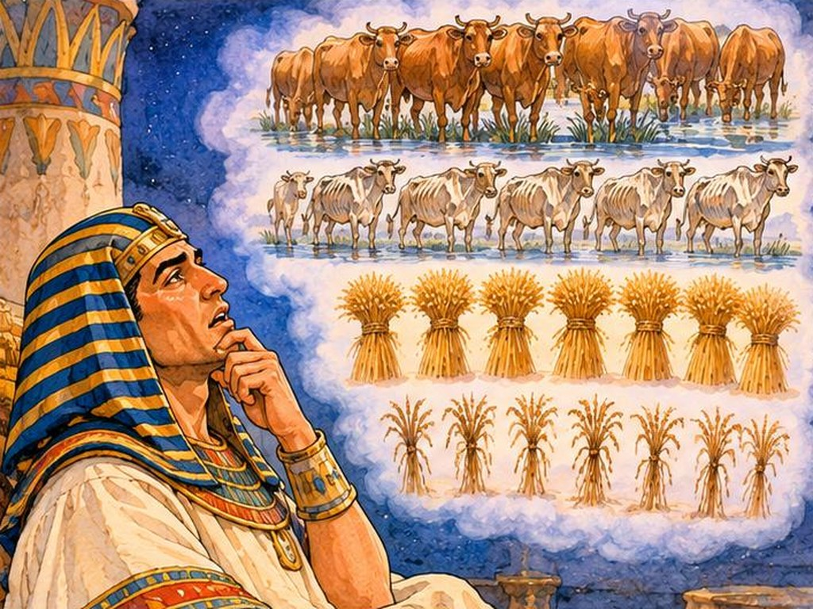

וַיְהִ֕י מִקֵּ֖ץ שְׁנָתַ֣יִם יָמִ֑ים וּפַרְעֹ֣ה חֹלֵ֔ם וְהִנֵּ֖ה עֹמֵ֥ד עַל־הַיְאֹֽר׃
ויהי מקץ שנתים ימים ופרעה חלם והנה עמד על־היאר׃
Après un intervalle de deux années, Pharaon eut un songe, où il se voyait debout au bord du fleuve.
וְהִנֵּ֣ה מִן־הַיְאֹ֗ר עֹלֹת֙ שֶׁ֣בַע פָּר֔וֹת יְפ֥וֹת מַרְאֶ֖ה וּבְרִיאֹ֣ת בָּשָׂ֑ר וַתִּרְעֶ֖ינָה בָּאָֽחוּ׃
והנה מן־היאר עלת שבע פרות יפות מראה ובריאת בשר ותרעינה באחו׃
Et voici que du fleuve sortaient sept vaches belles et grasses, qui se mirent à paître dans l’herbage;
וְהִנֵּ֞ה שֶׁ֧בַע פָּר֣וֹת אֲחֵר֗וֹת עֹל֤וֹת אַחֲרֵיהֶן֙ מִן־הַיְאֹ֔ר רָע֥וֹת מַרְאֶ֖ה וְדַקּ֣וֹת בָּשָׂ֑ר וַֽתַּעֲמֹ֛דְנָה אֵ֥צֶל הַפָּר֖וֹת עַל־שְׂפַ֥ת הַיְאֹֽר׃
והנה שבע פרות אחרות עלות אחריהן מן־היאר רעות מראה ודקות בשר ותעמדנה אצל הפרות על־שפת היאר׃
puis sept autres vaches sortirent du fleuve après elles, celles là chétives et maigres et s’arrêtèrent près des premières au bord du fleuve;
וַתֹּאכַ֣לְנָה הַפָּר֗וֹת רָע֤וֹת הַמַּרְאֶה֙ וְדַקֹּ֣ת הַבָּשָׂ֔ר אֵ֚ת שֶׁ֣בַע הַפָּר֔וֹת יְפֹ֥ת הַמַּרְאֶ֖ה וְהַבְּרִיאֹ֑ת וַיִּיקַ֖ץ פַּרְעֹֽה׃
ותאכלנה הפרות רעות המראה ודקת הבשר את שבע הפרות יפת המראה והבריאת וייקץ פרעה׃
et les vaches chétives et maigres dévorèrent les sept vaches belles et grasses. Alors Pharaon s’éveilla.
וַיִּישָׁ֕ן וַֽיַּחֲלֹ֖ם שֵׁנִ֑ית וְהִנֵּ֣ה ׀ שֶׁ֣בַע שִׁבֳּלִ֗ים עֹל֛וֹת בְּקָנֶ֥ה אֶחָ֖ד בְּרִיא֥וֹת וְטֹבֽוֹת׃
ויישן ויחלם שנית והנה ׀ שבע שבלים עלות בקנה אחד בריאות וטבות׃
Il se rendormit et eut un nouveau songe. Voici que sept épis, pleins et beaux, s’élevaient sur une seule tige;
וְהִנֵּה֙ שֶׁ֣בַע שִׁבֳּלִ֔ים דַּקּ֖וֹת וּשְׁדוּפֹ֣ת קָדִ֑ים צֹמְח֖וֹת אַחֲרֵיהֶֽן׃
והנה שבע שבלים דקות ושדופת קדים צמחות אחריהן׃
puis sept épis maigres et flétris par le vent d’est, s’élevèrent après eux,
וַתִּבְלַ֙עְנָה֙ הַשִּׁבֳּלִ֣ים הַדַּקּ֔וֹת אֵ֚ת שֶׁ֣בַע הַֽשִּׁבֳּלִ֔ים הַבְּרִיא֖וֹת וְהַמְּלֵא֑וֹת וַיִּיקַ֥ץ פַּרְעֹ֖ה וְהִנֵּ֥ה חֲלֽוֹם׃
ותבלענה השבלים הדקות את שבע השבלים הבריאות והמלאות וייקץ פרעה והנה חלום׃
et ces épis maigres engloutirent les sept épis grenus et pleins. Pharaon s’éveilla et c’était un songe.
וַיְהִ֤י בַבֹּ֙קֶר֙ וַתִּפָּ֣עֶם רוּח֔וֹ וַיִּשְׁלַ֗ח וַיִּקְרָ֛א אֶת־כׇּל־חַרְטֻמֵּ֥י מִצְרַ֖יִם וְאֶת־כׇּל־חֲכָמֶ֑יהָ וַיְסַפֵּ֨ר פַּרְעֹ֤ה לָהֶם֙ אֶת־חֲלֹמ֔וֹ וְאֵין־פּוֹתֵ֥ר אוֹתָ֖ם לְפַרְעֹֽה׃
ויהי בבקר ותפעם רוחו וישלח ויקרא את־כל־חרטמי מצרים ואת־כל־חכמיה ויספר פרעה להם את־חלמו ואין־פותר אותם לפרעה׃
Mais, le matin venu, son esprit en fut troublé et il manda tous les magiciens de l’Égypte et tous ses savants. Pharaon leur exposa son rêve, mais nul ne put lui en expliquer le sens.
וַיְדַבֵּר֙ שַׂ֣ר הַמַּשְׁקִ֔ים אֶת־פַּרְעֹ֖ה לֵאמֹ֑ר אֶת־חֲטָאַ֕י אֲנִ֖י מַזְכִּ֥יר הַיּֽוֹם׃
וידבר שר המשקים את־פרעה לאמר את־חטאי אני מזכיר היום׃
Alors le maître échanson parla devant Pharaon en ces termes: "Je rappelle, en cette occasion, mes fautes.
פַּרְעֹ֖ה קָצַ֣ף עַל־עֲבָדָ֑יו וַיִּתֵּ֨ן אֹתִ֜י בְּמִשְׁמַ֗ר בֵּ֚ית שַׂ֣ר הַטַּבָּחִ֔ים אֹתִ֕י וְאֵ֖ת שַׂ֥ר הָאֹפִֽים׃
פרעה קצף על־עבדיו ויתן אתי במשמר בית שר הטבחים אתי ואת שר האפים׃
Un jour, Pharaon était irrité contre ses serviteurs; et il nous fit enfermer dans la maison du chef des gardes, moi et le maître panetier.
וַנַּֽחַלְמָ֥ה חֲל֛וֹם בְּלַ֥יְלָה אֶחָ֖ד אֲנִ֣י וָה֑וּא אִ֛ישׁ כְּפִתְר֥וֹן חֲלֹמ֖וֹ חָלָֽמְנוּ׃
ונחלמה חלום בלילה אחד אני והוא איש כפתרון חלמו חלמנו׃
Nous eûmes un rêve la même nuit, lui et moi, chacun selon le pronostic de son rêve.
וְשָׁ֨ם אִתָּ֜נוּ נַ֣עַר עִבְרִ֗י עֶ֚בֶד לְשַׂ֣ר הַטַּבָּחִ֔ים וַ֨נְּסַפֶּר־ל֔וֹ וַיִּפְתׇּר־לָ֖נוּ אֶת־חֲלֹמֹתֵ֑ינוּ אִ֥ישׁ כַּחֲלֹמ֖וֹ פָּתָֽר׃
ושם אתנו נער עברי עבד לשר הטבחים ונספר־לו ויפתר־לנו את־חלמתינו איש כחלמו פתר׃
Là était avec nous un jeune hébreu, esclave du chef des gardes. Nous lui racontâmes nos songes et il nous les interpréta, à chacun selon le sens du sien.
וַיְהִ֛י כַּאֲשֶׁ֥ר פָּֽתַר־לָ֖נוּ כֵּ֣ן הָיָ֑ה אֹתִ֛י הֵשִׁ֥יב עַל־כַּנִּ֖י וְאֹת֥וֹ תָלָֽה׃
ויהי כאשר פתר־לנו כן היה אתי השיב על־כני ואתו תלה׃
Or, comme il nous avait pronostiqué, ainsi fut-il: moi, je fus rétabli dans mon poste et lui on le pendit."
וַיִּשְׁלַ֤ח פַּרְעֹה֙ וַיִּקְרָ֣א אֶת־יוֹסֵ֔ף וַיְרִיצֻ֖הוּ מִן־הַבּ֑וֹר וַיְגַלַּח֙ וַיְחַלֵּ֣ף שִׂמְלֹתָ֔יו וַיָּבֹ֖א אֶל־פַּרְעֹֽה׃
וישלח פרעה ויקרא את־יוסף ויריצהו מן־הבור ויגלח ויחלף שמלתיו ויבא אל־פרעה׃
Pharaon envoya quérir Joseph, qu’on fit sur le champ sortir de la geôle; il se rasa et changea de vêtements, puis il parut devant Pharaon.
וַיֹּ֤אמֶר פַּרְעֹה֙ אֶל־יוֹסֵ֔ף חֲל֣וֹם חָלַ֔מְתִּי וּפֹתֵ֖ר אֵ֣ין אֹת֑וֹ וַאֲנִ֗י שָׁמַ֤עְתִּי עָלֶ֙יךָ֙ לֵאמֹ֔ר תִּשְׁמַ֥ע חֲל֖וֹם לִפְתֹּ֥ר אֹתֽוֹ׃
ויאמר פרעה אל־יוסף חלום חלמתי ופתר אין אתו ואני שמעתי עליך לאמר תשמע חלום לפתר אתו׃
Et Pharaon dit à Joseph: "J’ai eu un songe et nul ne l’explique; mais j’ai ouï dire, quant à toi, que tu entends l’art d’interpréter un songe."
וַיַּ֨עַן יוֹסֵ֧ף אֶת־פַּרְעֹ֛ה לֵאמֹ֖ר בִּלְעָדָ֑י אֱלֹהִ֕ים יַעֲנֶ֖ה אֶת־שְׁל֥וֹם פַּרְעֹֽה׃
ויען יוסף את־פרעה לאמר בלעדי אלהים יענה את־שלום פרעה׃
Joseph répondit à Pharaon en disant: "Ce n’est pas moi, c’est Dieu, qui saura tranquilliser Pharaon."
וַיְדַבֵּ֥ר פַּרְעֹ֖ה אֶל־יוֹסֵ֑ף בַּחֲלֹמִ֕י הִנְנִ֥י עֹמֵ֖ד עַל־שְׂפַ֥ת הַיְאֹֽר׃
וידבר פרעה אל־יוסף בחלמי הנני עמד על־שפת היאר׃
Alors Pharaon parla ainsi à Joseph: "Dans mon songe, je me tenais au bord du fleuve.
וְהִנֵּ֣ה מִן־הַיְאֹ֗ר עֹלֹת֙ שֶׁ֣בַע פָּר֔וֹת בְּרִיא֥וֹת בָּשָׂ֖ר וִיפֹ֣ת תֹּ֑אַר וַתִּרְעֶ֖ינָה בָּאָֽחוּ׃
והנה מן־היאר עלת שבע פרות בריאות בשר ויפת תאר ותרעינה באחו׃
Et voici que du fleuve sortirent sept vaches grasses et de belle taille, qui vinrent paître dans l’herbage;
וְהִנֵּ֞ה שֶֽׁבַע־פָּר֤וֹת אֲחֵרוֹת֙ עֹל֣וֹת אַחֲרֵיהֶ֔ן דַּלּ֨וֹת וְרָע֥וֹת תֹּ֛אַר מְאֹ֖ד וְרַקּ֣וֹת בָּשָׂ֑ר לֹֽא־רָאִ֧יתִי כָהֵ֛נָּה בְּכׇל־אֶ֥רֶץ מִצְרַ֖יִם לָרֹֽעַ׃
והנה שבע־פרות אחרות עלות אחריהן דלות ורעות תאר מאד ורקות בשר לא־ראיתי כהנה בכל־ארץ מצרים לרע׃
puis sept autres vaches les suivirent, maigres, d’apparence fort chétive et toutes décharnées: je n’en ai point vu d’aussi misérables dans tout le pays d’Égypte.
וַתֹּאכַ֙לְנָה֙ הַפָּר֔וֹת הָרַקּ֖וֹת וְהָרָע֑וֹת אֵ֣ת שֶׁ֧בַע הַפָּר֛וֹת הָרִאשֹׁנ֖וֹת הַבְּרִיאֹֽת׃
ותאכלנה הפרות הרקות והרעות את שבע הפרות הראשנות הבריאת׃
Ces vaches maigres et chétives dévorèrent les sept premières vaches, les grasses.
וַתָּבֹ֣אנָה אֶל־קִרְבֶּ֗נָה וְלֹ֤א נוֹדַע֙ כִּי־בָ֣אוּ אֶל־קִרְבֶּ֔נָה וּמַרְאֵיהֶ֣ן רַ֔ע כַּאֲשֶׁ֖ר בַּתְּחִלָּ֑ה וָאִיקָֽץ׃
ותבאנה אל־קרבנה ולא נודע כי־באו אל־קרבנה ומראיהן רע כאשר בתחלה ואיקץ׃
Celles ci donc passèrent dans leur corps, mais on ne se serait pas douté qu’elles y eussent passé: elles étaient chétives comme auparavant. Je m’éveillai.
וָאֵ֖רֶא בַּחֲלֹמִ֑י וְהִנֵּ֣ה ׀ שֶׁ֣בַע שִׁבֳּלִ֗ים עֹלֹ֛ת בְּקָנֶ֥ה אֶחָ֖ד מְלֵאֹ֥ת וְטֹבֽוֹת׃
וארא בחלמי והנה ׀ שבע שבלים עלת בקנה אחד מלאת וטבות׃
Puis je vis en songe sept épis, s’élevant sur une même tige, pleins et beaux;
וְהִנֵּה֙ שֶׁ֣בַע שִׁבֳּלִ֔ים צְנֻמ֥וֹת דַּקּ֖וֹת שְׁדֻפ֣וֹת קָדִ֑ים צֹמְח֖וֹת אַחֲרֵיהֶֽם׃
והנה שבע שבלים צנמות דקות שדפות קדים צמחות אחריהם׃
ensuite sept épis secs, maigres, brûlés par le vent d’est, s’élevèrent après eux,
וַתִּבְלַ֙עְןָ֙ הַשִּׁבֳּלִ֣ים הַדַּקֹּ֔ת אֵ֛ת שֶׁ֥בַע הַֽשִּׁבֳּלִ֖ים הַטֹּב֑וֹת וָֽאֹמַר֙ אֶל־הַֽחַרְטֻמִּ֔ים וְאֵ֥ין מַגִּ֖יד לִֽי׃
ותבלען השבלים הדקת את שבע השבלים הטבות ואמר אל־החרטמים ואין מגיד לי׃
et ces épis maigres absorbèrent les sept beaux épis. Je l’ai raconté aux magiciens et nul ne me l’a expliqué."
וַיֹּ֤אמֶר יוֹסֵף֙ אֶל־פַּרְעֹ֔ה חֲל֥וֹם פַּרְעֹ֖ה אֶחָ֣ד ה֑וּא אֵ֣ת אֲשֶׁ֧ר הָאֱלֹהִ֛ים עֹשֶׂ֖ה הִגִּ֥יד לְפַרְעֹֽה׃
ויאמר יוסף אל־פרעה חלום פרעה אחד הוא את אשר האלהים עשה הגיד לפרעה׃
Joseph dit à Pharaon: "Le songe de Pharaon est un: ce que Dieu prépare, il l’a annoncé à Pharaon.
שֶׁ֧בַע פָּרֹ֣ת הַטֹּבֹ֗ת שֶׁ֤בַע שָׁנִים֙ הֵ֔נָּה וְשֶׁ֤בַע הַֽשִּׁבֳּלִים֙ הַטֹּבֹ֔ת שֶׁ֥בַע שָׁנִ֖ים הֵ֑נָּה חֲל֖וֹם אֶחָ֥ד הֽוּא׃
שבע פרת הטבת שבע שנים הנה ושבע השבלים הטבת שבע שנים הנה חלום אחד הוא׃
Les sept belles vaches, ce sont sept années; les sept beaux épis, sept années: c’est un même songe.
וְשֶׁ֣בַע הַ֠פָּר֠וֹת הָֽרַקּ֨וֹת וְהָרָעֹ֜ת הָעֹלֹ֣ת אַחֲרֵיהֶ֗ן שֶׁ֤בַע שָׁנִים֙ הֵ֔נָּה וְשֶׁ֤בַע הַֽשִּׁבֳּלִים֙ הָרֵק֔וֹת שְׁדֻפ֖וֹת הַקָּדִ֑ים יִהְי֕וּ שֶׁ֖בַע שְׁנֵ֥י רָעָֽב׃
ושבע הפרות הרקות והרעת העלת אחריהן שבע שנים הנה ושבע השבלים הרקות שדפות הקדים יהיו שבע שני רעב׃
Et les sept vaches maigres et laides qui sont sorties en second lieu, sept années, de même que les sept épis vides frappés par le vent d’est. Ce seront sept années de famine.
ה֣וּא הַדָּבָ֔ר אֲשֶׁ֥ר דִּבַּ֖רְתִּי אֶל־פַּרְעֹ֑ה אֲשֶׁ֧ר הָאֱלֹהִ֛ים עֹשֶׂ֖ה הֶרְאָ֥ה אֶת־פַּרְעֹֽה׃
הוא הדבר אשר דברתי אל־פרעה אשר האלהים עשה הראה את־פרעה׃
C’est bien ce que je disais à Pharaon ce que Dieu prépare, il l’a révélé à Pharaon.
הִנֵּ֛ה שֶׁ֥בַע שָׁנִ֖ים בָּא֑וֹת שָׂבָ֥ע גָּד֖וֹל בְּכׇל־אֶ֥רֶץ מִצְרָֽיִם׃
הנה שבע שנים באות שבע גדול בכל־ארץ מצרים׃
Oui, sept années vont venir, abondance extraordinaire dans tout le territoire d’Égypte.
וְ֠קָ֠מוּ שֶׁ֜בַע שְׁנֵ֤י רָעָב֙ אַחֲרֵיהֶ֔ן וְנִשְׁכַּ֥ח כׇּל־הַשָּׂבָ֖ע בְּאֶ֣רֶץ מִצְרָ֑יִם וְכִלָּ֥ה הָרָעָ֖ב אֶת־הָאָֽרֶץ׃
וקמו שבע שני רעב אחריהן ונשכח כל־השבע בארץ מצרים וכלה הרעב את־הארץ׃
Mais sept années de disette surgiront après elles et toute abondance disparaîtra dans le pays d’Égypte et la famine épuisera le pays.
וְלֹֽא־יִוָּדַ֤ע הַשָּׂבָע֙ בָּאָ֔רֶץ מִפְּנֵ֛י הָרָעָ֥ב הַה֖וּא אַחֲרֵי־כֵ֑ן כִּֽי־כָבֵ֥ד ה֖וּא מְאֹֽד׃
ולא־יודע השבע בארץ מפני הרעב ההוא אחרי־כן כי־כבד הוא מאד׃
Le souvenir de l’abondance sera effacé dans le pays par cette famine qui surviendra, car elle sera excessive.
וְעַ֨ל הִשָּׁנ֧וֹת הַחֲל֛וֹם אֶל־פַּרְעֹ֖ה פַּעֲמָ֑יִם כִּֽי־נָכ֤וֹן הַדָּבָר֙ מֵעִ֣ם הָאֱלֹהִ֔ים וּמְמַהֵ֥ר הָאֱלֹהִ֖ים לַעֲשֹׂתֽוֹ׃
ועל השנות החלום אל־פרעה פעמים כי־נכון הדבר מעם האלהים וממהר האלהים לעשתו׃
Et si le songe s’est reproduit à Pharaon par deux fois, c’est que la chose est arrêtée devant Dieu, c’est que Dieu est sur le point de l’accomplir.
וְעַתָּה֙ יֵרֶ֣א פַרְעֹ֔ה אִ֖ישׁ נָב֣וֹן וְחָכָ֑ם וִישִׁיתֵ֖הוּ עַל־אֶ֥רֶץ מִצְרָֽיִם׃
ועתה ירא פרעה איש נבון וחכם וישיתהו על־ארץ מצרים׃
Donc, que Pharaon choisisse un homme prudent et sage et qu’il le prépose au pays d’Égypte.
יַעֲשֶׂ֣ה פַרְעֹ֔ה וְיַפְקֵ֥ד פְּקִדִ֖ים עַל־הָאָ֑רֶץ וְחִמֵּשׁ֙ אֶת־אֶ֣רֶץ מִצְרַ֔יִם בְּשֶׁ֖בַע שְׁנֵ֥י הַשָּׂבָֽע׃
יעשה פרעה ויפקד פקדים על־הארץ וחמש את־ארץ מצרים בשבע שני השבע׃
Que Pharaon avise à ce qu’on établisse des commissaires dans le pays et qu’on impose d’un cinquième le territoire d’Égypte durant les sept années d’abondance.
וְיִקְבְּצ֗וּ אֶת־כׇּל־אֹ֙כֶל֙ הַשָּׁנִ֣ים הַטֹּב֔וֹת הַבָּאֹ֖ת הָאֵ֑לֶּה וְיִצְבְּרוּ־בָ֞ר תַּ֧חַת יַד־פַּרְעֹ֛ה אֹ֥כֶל בֶּעָרִ֖ים וְשָׁמָֽרוּ׃
ויקבצו את־כל־אכל השנים הטבות הבאת האלה ויצברו־בר תחת יד־פרעה אכל בערים ושמרו׃
Qu’on amasse toute la nourriture de ces années fertiles qui approchent; qu’on emmagasine du blé sous la main de Pharaon, pour l’approvisionnement des villes et qu’on le tienne en réserve.
וְהָיָ֨ה הָאֹ֤כֶל לְפִקָּדוֹן֙ לָאָ֔רֶץ לְשֶׁ֙בַע֙ שְׁנֵ֣י הָרָעָ֔ב אֲשֶׁ֥ר תִּהְיֶ֖יןָ בְּאֶ֣רֶץ מִצְרָ֑יִם וְלֹֽא־תִכָּרֵ֥ת הָאָ֖רֶץ בָּרָעָֽב׃
והיה האכל לפקדון לארץ לשבע שני הרעב אשר תהיין בארץ מצרים ולא־תכרת הארץ ברעב׃
Ces provisions seront une ressource pour le pays, lors des sept années de disette qui surviendront en Égypte, afin que ce pays ne périsse pas par la famine."
וַיִּיטַ֥ב הַדָּבָ֖ר בְּעֵינֵ֣י פַרְעֹ֑ה וּבְעֵינֵ֖י כׇּל־עֲבָדָֽיו׃
וייטב הדבר בעיני פרעה ובעיני כל־עבדיו׃
Ce discours plut à Pharaon et à tous ses serviteurs.
וַיֹּ֥אמֶר פַּרְעֹ֖ה אֶל־עֲבָדָ֑יו הֲנִמְצָ֣א כָזֶ֔ה אִ֕ישׁ אֲשֶׁ֛ר ר֥וּחַ אֱלֹהִ֖ים בּֽוֹ׃
ויאמר פרעה אל־עבדיו הנמצא כזה איש אשר רוח אלהים בו׃
Et Pharaon dit à ses serviteurs: "Pourrions-nous trouver un homme tel que celui-ci, plein de l’esprit de Dieu?"
וַיֹּ֤אמֶר פַּרְעֹה֙ אֶל־יוֹסֵ֔ף אַחֲרֵ֨י הוֹדִ֧יעַ אֱלֹהִ֛ים אוֹתְךָ֖ אֶת־כׇּל־זֹ֑את אֵין־נָב֥וֹן וְחָכָ֖ם כָּמֽוֹךָ׃
ויאמר פרעה אל־יוסף אחרי הודיע אלהים אותך את־כל־זאת אין־נבון וחכם כמוך׃
Et Pharaon dit à Joseph: "Puisque Dieu t’a révélé tout cela, nul n’est sage et entendu comme toi.
אַתָּה֙ תִּהְיֶ֣ה עַל־בֵּיתִ֔י וְעַל־פִּ֖יךָ יִשַּׁ֣ק כׇּל־עַמִּ֑י רַ֥ק הַכִּסֵּ֖א אֶגְדַּ֥ל מִמֶּֽךָּ׃
אתה תהיה על־ביתי ועל־פיך ישק כל־עמי רק הכסא אגדל ממך׃
C’est toi qui sera le chef de ma maison; tout mon peuple sera gouverné par ta parole et je n’aurai sur toi que la prééminence du trône."
וַיֹּ֥אמֶר פַּרְעֹ֖ה אֶל־יוֹסֵ֑ף רְאֵה֙ נָתַ֣תִּי אֹֽתְךָ֔ עַ֖ל כׇּל־אֶ֥רֶץ מִצְרָֽיִם׃
ויאמר פרעה אל־יוסף ראה נתתי אתך על כל־ארץ מצרים׃
Pharaon dit à Joseph: "Vois! je te mets à la tête de tout le pays d’Égypte."
וַיָּ֨סַר פַּרְעֹ֤ה אֶת־טַבַּעְתּוֹ֙ מֵעַ֣ל יָד֔וֹ וַיִּתֵּ֥ן אֹתָ֖הּ עַל־יַ֣ד יוֹסֵ֑ף וַיַּלְבֵּ֤שׁ אֹתוֹ֙ בִּגְדֵי־שֵׁ֔שׁ וַיָּ֛שֶׂם רְבִ֥ד הַזָּהָ֖ב עַל־צַוָּארֽוֹ׃
ויסר פרעה את־טבעתו מעל ידו ויתן אתה על־יד יוסף וילבש אתו בגדי־שש וישם רבד הזהב על־צוארו׃
Et Pharaon ôta son anneau de sa main et le passa à celle de Joseph; il le fit habiller de byssus et suspendit le collier d’or de son cou.
וַיַּרְכֵּ֣ב אֹת֗וֹ בְּמִרְכֶּ֤בֶת הַמִּשְׁנֶה֙ אֲשֶׁר־ל֔וֹ וַיִּקְרְא֥וּ לְפָנָ֖יו אַבְרֵ֑ךְ וְנָת֣וֹן אֹת֔וֹ עַ֖ל כׇּל־אֶ֥רֶץ מִצְרָֽיִם׃
וירכב אתו במרכבת המשנה אשר־לו ויקראו לפניו אברך ונתון אתו על כל־ארץ מצרים׃
Il le fit monter sur son second char; on cria devant lui: Abrêk et il fut installé chef de tout le pays d’Égypte.
וַיֹּ֧אמֶר פַּרְעֹ֛ה אֶל־יוֹסֵ֖ף אֲנִ֣י פַרְעֹ֑ה וּבִלְעָדֶ֗יךָ לֹֽא־יָרִ֨ים אִ֧ישׁ אֶת־יָד֛וֹ וְאֶת־רַגְל֖וֹ בְּכׇל־אֶ֥רֶץ מִצְרָֽיִם׃
ויאמר פרעה אל־יוסף אני פרעה ובלעדיך לא־ירים איש את־ידו ואת־רגלו בכל־ארץ מצרים׃
Pharaon dit à Joseph: "Je suis le Pharaon; mais, sans ton ordre, nul ne remuera la main ni le pied dans tout le pays d’Égypte."
וַיִּקְרָ֨א פַרְעֹ֣ה שֵׁם־יוֹסֵף֮ צָֽפְנַ֣ת פַּעְנֵ֒חַ֒ וַיִּתֶּן־ל֣וֹ אֶת־אָֽסְנַ֗ת בַּת־פּ֥וֹטִי פֶ֛רַע*(בספרי תימן פּֽוֹטִיפֶ֛רַע בתיבה אחת) כֹּהֵ֥ן אֹ֖ן לְאִשָּׁ֑ה וַיֵּצֵ֥א יוֹסֵ֖ף עַל־אֶ֥רֶץ מִצְרָֽיִם׃
ויקרא פרעה שם־יוסף צפנת פענח ויתן־לו את־אסנת בת־פוטי פרע*(בספרי תימן פוטיפרע בתיבה אחת) כהן אן לאשה ויצא יוסף על־ארץ מצרים׃
Pharaon surnomma Joseph Çâfenath Panéah et il lui donna pour femme Asenath, fille de Pôti Féra, prêtre d’On. Joseph fit une excursion dans le pays d’Égypte.
וְיוֹסֵף֙ בֶּן־שְׁלֹשִׁ֣ים שָׁנָ֔ה בְּעׇמְד֕וֹ לִפְנֵ֖י פַּרְעֹ֣ה מֶֽלֶךְ־מִצְרָ֑יִם וַיֵּצֵ֤א יוֹסֵף֙ מִלִּפְנֵ֣י פַרְעֹ֔ה וַֽיַּעֲבֹ֖ר בְּכׇל־אֶ֥רֶץ מִצְרָֽיִם׃
ויוסף בן־שלשים שנה בעמדו לפני פרעה מלך־מצרים ויצא יוסף מלפני פרעה ויעבר בכל־ארץ מצרים׃
Or, Joseph avait trente ans lorsqu’il parut devant Pharaon, roi d’Egypte. Joseph, étant sorti de devant Pharaon, parcourut tout le pays d’Egypte.
וַתַּ֣עַשׂ הָאָ֔רֶץ בְּשֶׁ֖בַע שְׁנֵ֣י הַשָּׂבָ֑ע לִקְמָצִֽים׃
ותעש הארץ בשבע שני השבע לקמצים׃
La terre, pendant les sept années de fertilité, produisit d’abondantes moissons.
וַיִּקְבֹּ֞ץ אֶת־כׇּל־אֹ֣כֶל ׀ שֶׁ֣בַע שָׁנִ֗ים אֲשֶׁ֤ר הָיוּ֙ בְּאֶ֣רֶץ מִצְרַ֔יִם וַיִּתֶּן־אֹ֖כֶל בֶּעָרִ֑ים אֹ֧כֶל שְׂדֵה־הָעִ֛יר אֲשֶׁ֥ר סְבִיבֹתֶ֖יהָ נָתַ֥ן בְּתוֹכָֽהּ׃
ויקבץ את־כל־אכל ׀ שבע שנים אשר היו בארץ מצרים ויתן־אכל בערים אכל שדה־העיר אשר סביבתיה נתן בתוכה׃
On amassa toutes les denrées des sept années, qui se trouvèrent dans le pays d’Égypte et l’on approvisionna les villes: on mit dans chaque ville les denrées des campagnes d’alentour.
וַיִּצְבֹּ֨ר יוֹסֵ֥ף בָּ֛ר כְּח֥וֹל הַיָּ֖ם הַרְבֵּ֣ה מְאֹ֑ד עַ֛ד כִּי־חָדַ֥ל לִסְפֹּ֖ר כִּי־אֵ֥ין מִסְפָּֽר׃
ויצבר יוסף בר כחול הים הרבה מאד עד כי־חדל לספר כי־אין מספר׃
Et Joseph fit des amas de blé considérables comme le sable de la mer; tellement qu’on cessa de le compter, car c’était incalculable.
וּלְיוֹסֵ֤ף יֻלַּד֙ שְׁנֵ֣י בָנִ֔ים בְּטֶ֥רֶם תָּב֖וֹא שְׁנַ֣ת הָרָעָ֑ב אֲשֶׁ֤ר יָֽלְדָה־לּוֹ֙ אָֽסְנַ֔ת בַּת־פּ֥וֹטִי פֶ֖רַע*(בספרי תימן פּֽוֹטִיפֶ֖רַע בתיבה אחת) כֹּהֵ֥ן אֽוֹן׃
וליוסף ילד שני בנים בטרם תבוא שנת הרעב אשר ילדה־לו אסנת בת־פוטי פרע*(בספרי תימן פוטיפרע בתיבה אחת) כהן און׃
Or, il naquit à Joseph, avant qu’arrivât la période de disette, deux fils, que lui donna Asenath, fille de Pôti Féra, prêtre d’On.
וַיִּקְרָ֥א יוֹסֵ֛ף אֶת־שֵׁ֥ם הַבְּכ֖וֹר מְנַשֶּׁ֑ה כִּֽי־נַשַּׁ֤נִי אֱלֹהִים֙ אֶת־כׇּל־עֲמָלִ֔י וְאֵ֖ת כׇּל־בֵּ֥ית אָבִֽי׃
ויקרא יוסף את־שם הבכור מנשה כי־נשני אלהים את־כל־עמלי ואת כל־בית אבי׃
Joseph appela le premier né Manassé: "Car Dieu m’a fait oublier toutes mes tribulations et toute la maison de mon père."
וְאֵ֛ת שֵׁ֥ם הַשֵּׁנִ֖י קָרָ֣א אֶפְרָ֑יִם כִּֽי־הִפְרַ֥נִי אֱלֹהִ֖ים בְּאֶ֥רֶץ עׇנְיִֽי׃
ואת שם השני קרא אפרים כי־הפרני אלהים בארץ עניי׃
Au second, il donna le nom d’Éphraïm: "Car Dieu m’a fait fructifier dans le pays de ma misère."
וַתִּכְלֶ֕ינָה שֶׁ֖בַע שְׁנֵ֣י הַשָּׂבָ֑ע אֲשֶׁ֥ר הָיָ֖ה בְּאֶ֥רֶץ מִצְרָֽיִם׃
ותכלינה שבע שני השבע אשר היה בארץ מצרים׃
Quand furent écoulées les sept années de l’abondance qui régnait dans le pays d’Égypte,
וַתְּחִלֶּ֜ינָה שֶׁ֣בַע שְׁנֵ֤י הָרָעָב֙ לָב֔וֹא כַּאֲשֶׁ֖ר אָמַ֣ר יוֹסֵ֑ף וַיְהִ֤י רָעָב֙ בְּכׇל־הָ֣אֲרָצ֔וֹת וּבְכׇל־אֶ֥רֶץ מִצְרַ֖יִם הָ֥יָה לָֽחֶם׃
ותחלינה שבע שני הרעב לבוא כאשר אמר יוסף ויהי רעב בכל־הארצות ובכל־ארץ מצרים היה לחם׃
survinrent les sept années de disette, comme l’avait prédit Joseph. Il y eut famine dans tous les pays, mais dans tout le pays d’Égypte il y avait du pain.
וַתִּרְעַב֙ כׇּל־אֶ֣רֶץ מִצְרַ֔יִם וַיִּצְעַ֥ק הָעָ֛ם אֶל־פַּרְעֹ֖ה לַלָּ֑חֶם וַיֹּ֨אמֶר פַּרְעֹ֤ה לְכׇל־מִצְרַ֙יִם֙ לְכ֣וּ אֶל־יוֹסֵ֔ף אֲשֶׁר־יֹאמַ֥ר לָכֶ֖ם תַּעֲשֽׂוּ׃
ותרעב כל־ארץ מצרים ויצעק העם אל־פרעה ללחם ויאמר פרעה לכל־מצרים לכו אל־יוסף אשר־יאמר לכם תעשו׃
Tout le territoire égyptien étant affligé par la disette, le peuple demanda à grands cris, à Pharaon, du pain. Mais Pharaon répondit à tous les Égyptiens: "Allez à Joseph; ce qu’il vous dira, vous le ferez."
וְהָרָעָ֣ב הָיָ֔ה עַ֖ל כׇּל־פְּנֵ֣י הָאָ֑רֶץ וַיִּפְתַּ֨ח יוֹסֵ֜ף אֶֽת־כׇּל־אֲשֶׁ֤ר בָּהֶם֙ וַיִּשְׁבֹּ֣ר לְמִצְרַ֔יִם וַיֶּחֱזַ֥ק הָֽרָעָ֖ב בְּאֶ֥רֶץ מִצְרָֽיִם׃
והרעב היה על כל־פני הארץ ויפתח יוסף את־כל־אשר בהם וישבר למצרים ויחזק הרעב בארץ מצרים׃
Comme la famine régnait sur toute la contrée, Joseph ouvrit tous les greniers et vendit du blé aux Égyptiens. La famine persista dans le pays d’Égypte.
וְכׇל־הָאָ֙רֶץ֙ בָּ֣אוּ מִצְרַ֔יְמָה לִשְׁבֹּ֖ר אֶל־יוֹסֵ֑ף כִּֽי־חָזַ֥ק הָרָעָ֖ב בְּכׇל־הָאָֽרֶץ׃
וכל־הארץ באו מצרימה לשבר אל־יוסף כי־חזק הרעב בכל־הארץ׃
De tous les pays on venait en Égypte pour acheter à Joseph, car la famine était grande dans toute la contrée.
וַיַּ֣רְא יַעֲקֹ֔ב כִּ֥י יֶשׁ־שֶׁ֖בֶר בְּמִצְרָ֑יִם וַיֹּ֤אמֶר יַעֲקֹב֙ לְבָנָ֔יו לָ֖מָּה תִּתְרָאֽוּ׃
וירא יעקב כי יש־שבר במצרים ויאמר יעקב לבניו למה תתראו׃
Jacob, voyant qu’il y avait vente de blé en Égypte, dit à ses fils: "Pourquoi vous entre regarder?"
וַיֹּ֕אמֶר הִנֵּ֣ה שָׁמַ֔עְתִּי כִּ֥י יֶשׁ־שֶׁ֖בֶר בְּמִצְרָ֑יִם רְדוּ־שָׁ֙מָּה֙ וְשִׁבְרוּ־לָ֣נוּ מִשָּׁ֔ם וְנִחְיֶ֖ה וְלֹ֥א נָמֽוּת׃
ויאמר הנה שמעתי כי יש־שבר במצרים רדו־שמה ושברו־לנו משם ונחיה ולא נמות׃
Il ajouta "J’ai ouï dire qu’il y avait vente de blé en Égypte. Allez-y, achetez-y du blé pour nous et nous resterons en vie au lieu de mourir."
וַיֵּרְד֥וּ אֲחֵֽי־יוֹסֵ֖ף עֲשָׂרָ֑ה לִשְׁבֹּ֥ר בָּ֖ר מִמִּצְרָֽיִם׃
וירדו אחי־יוסף עשרה לשבר בר ממצרים׃
Les frères de Joseph partirent à dix, pour acheter du grain en Égypte.
וְאֶת־בִּנְיָמִין֙ אֲחִ֣י יוֹסֵ֔ף לֹא־שָׁלַ֥ח יַעֲקֹ֖ב אֶת־אֶחָ֑יו כִּ֣י אָמַ֔ר פֶּן־יִקְרָאֶ֖נּוּ אָסֽוֹן׃
ואת־בנימין אחי יוסף לא־שלח יעקב את־אחיו כי אמר פן־יקראנו אסון׃
Quant à Benjamin, frère de Joseph, Jacob ne le laissa pas aller avec ses frères, parce qu’il se disait: "Il pourrait lui arriver malheur."
וַיָּבֹ֙אוּ֙ בְּנֵ֣י יִשְׂרָאֵ֔ל לִשְׁבֹּ֖ר בְּת֣וֹךְ הַבָּאִ֑ים כִּֽי־הָיָ֥ה הָרָעָ֖ב בְּאֶ֥רֶץ כְּנָֽעַן׃
ויבאו בני ישראל לשבר בתוך הבאים כי־היה הרעב בארץ כנען׃
Les fils d’Israël vinrent s’approvisionner avec ceux qui allaient en "gypte, la disette régnant dans le pays de Canaan.
וְיוֹסֵ֗ף ה֚וּא הַשַּׁלִּ֣יט עַל־הָאָ֔רֶץ ה֥וּא הַמַּשְׁבִּ֖יר לְכׇל־עַ֣ם הָאָ֑רֶץ וַיָּבֹ֙אוּ֙ אֲחֵ֣י יוֹסֵ֔ף וַיִּשְׁתַּֽחֲווּ־ל֥וֹ אַפַּ֖יִם אָֽרְצָה׃
ויוסף הוא השליט על־הארץ הוא המשביר לכל־עם הארץ ויבאו אחי יוסף וישתחוו־לו אפים ארצה׃
Or, Joseph était le gouverneur de la contrée; c’était lui qui faisait distribuer le blé à tout le peuple du pays. Les frères de Joseph à leur arrivée, se prosternèrent devant lui la face contre terre.
וַיַּ֥רְא יוֹסֵ֛ף אֶת־אֶחָ֖יו וַיַּכִּרֵ֑ם וַיִּתְנַכֵּ֨ר אֲלֵיהֶ֜ם וַיְדַבֵּ֧ר אִתָּ֣ם קָשׁ֗וֹת וַיֹּ֤אמֶר אֲלֵהֶם֙ מֵאַ֣יִן בָּאתֶ֔ם וַיֹּ֣אמְר֔וּ מֵאֶ֥רֶץ כְּנַ֖עַן לִשְׁבׇּר־אֹֽכֶל׃
וירא יוסף את־אחיו ויכרם ויתנכר אליהם וידבר אתם קשות ויאמר אלהם מאין באתם ויאמרו מארץ כנען לשבר־אכל׃
En voyant ses frères, Joseph les reconnut; mais il dissimula vis à vis d’eux, et, leur parlant rudement, leur dit: "D’où venez vous?" Ils répondirent: "Du pays de Canaan, pour acheter des vivres.
וַיַּכֵּ֥ר יוֹסֵ֖ף אֶת־אֶחָ֑יו וְהֵ֖ם לֹ֥א הִכִּרֻֽהוּ׃
ויכר יוסף את־אחיו והם לא הכרהו׃
Joseph reconnut bien ses frères, mais eux ne le reconnurent point.
וַיִּזְכֹּ֣ר יוֹסֵ֔ף אֵ֚ת הַחֲלֹמ֔וֹת אֲשֶׁ֥ר חָלַ֖ם לָהֶ֑ם וַיֹּ֤אמֶר אֲלֵהֶם֙ מְרַגְּלִ֣ים אַתֶּ֔ם לִרְא֛וֹת אֶת־עֶרְוַ֥ת הָאָ֖רֶץ בָּאתֶֽם׃
ויזכר יוסף את החלמות אשר חלם להם ויאמר אלהם מרגלים אתם לראות את־ערות הארץ באתם׃
Joseph se souvint alors des songes qu’il avait eus à leur sujet. Il leur dit: "Vous êtes des espions! C’est pour découvrir le côté faible du pays que vous êtes venus!"
וַיֹּאמְר֥וּ אֵלָ֖יו לֹ֣א אֲדֹנִ֑י וַעֲבָדֶ֥יךָ בָּ֖אוּ לִשְׁבׇּר־אֹֽכֶל׃
ויאמרו אליו לא אדני ועבדיך באו לשבר־אכל׃
Ils lui répondirent: "Non, seigneur, mais tes serviteurs sont venus pour acheter des vivres.
כֻּלָּ֕נוּ בְּנֵ֥י אִישׁ־אֶחָ֖ד נָ֑חְנוּ כֵּנִ֣ים אֲנַ֔חְנוּ לֹא־הָי֥וּ עֲבָדֶ֖יךָ מְרַגְּלִֽים׃
כלנו בני איש־אחד נחנו כנים אנחנו לא־היו עבדיך מרגלים׃
Tous fils d’un même père, nous sommes d’honnêtes gens; tes serviteurs ne furent jamais des espions."
וַיֹּ֖אמֶר אֲלֵהֶ֑ם לֹ֕א כִּֽי־עֶרְוַ֥ת הָאָ֖רֶץ בָּאתֶ֥ם לִרְאֽוֹת׃
ויאמר אלהם לא כי־ערות הארץ באתם לראות׃
Il leur dit: "Point du tout! Vous êtes venus reconnaître les côtés faibles du territoire."
וַיֹּאמְר֗וּ שְׁנֵ֣ים עָשָׂר֩ עֲבָדֶ֨יךָ אַחִ֧ים ׀ אֲנַ֛חְנוּ בְּנֵ֥י אִישׁ־אֶחָ֖ד בְּאֶ֣רֶץ כְּנָ֑עַן וְהִנֵּ֨ה הַקָּטֹ֤ן אֶת־אָבִ֙ינוּ֙ הַיּ֔וֹם וְהָאֶחָ֖ד אֵינֶֽנּוּ׃
ויאמרו שנים עשר עבדיך אחים ׀ אנחנו בני איש־אחד בארץ כנען והנה הקטן את־אבינו היום והאחד איננו׃
Ils répondirent: "Nous, tes serviteurs, sommes douze frères, nés d’un même père, habitants du pays de Canaan; le plus jeune est auprès de notre père en ce moment et l’autre n’est plus."
וַיֹּ֥אמֶר אֲלֵהֶ֖ם יוֹסֵ֑ף ה֗וּא אֲשֶׁ֨ר דִּבַּ֧רְתִּי אֲלֵכֶ֛ם לֵאמֹ֖ר מְרַגְּלִ֥ים אַתֶּֽם׃
ויאמר אלהם יוסף הוא אשר דברתי אלכם לאמר מרגלים אתם׃
Joseph leur dit: "Ce que je vous ai déclaré subsiste: vous êtes des espions.
בְּזֹ֖את תִּבָּחֵ֑נוּ חֵ֤י פַרְעֹה֙ אִם־תֵּצְא֣וּ מִזֶּ֔ה כִּ֧י אִם־בְּב֛וֹא אֲחִיכֶ֥ם הַקָּטֹ֖ן הֵֽנָּה׃
בזאת תבחנו חי פרעה אם־תצאו מזה כי אם־בבוא אחיכם הקטן הנה׃
C’est par là que vous serez jugés: sur la vie de Pharaon, vous ne sortirez pas d’ici que votre plus jeune frère n’y soit venu.
שִׁלְח֨וּ מִכֶּ֣ם אֶחָד֮ וְיִקַּ֣ח אֶת־אֲחִיכֶם֒ וְאַתֶּם֙ הֵאָ֣סְר֔וּ וְיִבָּֽחֲנוּ֙ דִּבְרֵיכֶ֔ם הַֽאֱמֶ֖ת אִתְּכֶ֑ם וְאִם־לֹ֕א חֵ֣י פַרְעֹ֔ה כִּ֥י מְרַגְּלִ֖ים אַתֶּֽם׃
שלחו מכם אחד ויקח את־אחיכם ואתם האסרו ויבחנו דבריכם האמת אתכם ואם־לא חי פרעה כי מרגלים אתם׃
Dépêchez l’un de vous pour qu’il aille quérir votre frère et vous, restez prisonniers: on appréciera alors la sincérité de vos paroles. Autrement, par Pharaon! vous êtes des espions."
וַיֶּאֱסֹ֥ף אֹתָ֛ם אֶל־מִשְׁמָ֖ר שְׁלֹ֥שֶׁת יָמִֽים׃
ויאסף אתם אל־משמר שלשת ימים׃
Et il les garda en prison durant trois jours.
וַיֹּ֨אמֶר אֲלֵהֶ֤ם יוֹסֵף֙ בַּיּ֣וֹם הַשְּׁלִישִׁ֔י זֹ֥את עֲשׂ֖וּ וִֽחְי֑וּ אֶת־הָאֱלֹהִ֖ים אֲנִ֥י יָרֵֽא׃
ויאמר אלהם יוסף ביום השלישי זאת עשו וחיו את־האלהים אני ירא׃
Le troisième jour, Joseph leur dit: "Faites ceci et vous vivrez; je crains le Seigneur.
אִם־כֵּנִ֣ים אַתֶּ֔ם אֲחִיכֶ֣ם אֶחָ֔ד יֵאָסֵ֖ר בְּבֵ֣ית מִשְׁמַרְכֶ֑ם וְאַתֶּם֙ לְכ֣וּ הָבִ֔יאוּ שֶׁ֖בֶר רַעֲב֥וֹן בָּתֵּיכֶֽם׃
אם־כנים אתם אחיכם אחד יאסר בבית משמרכם ואתם לכו הביאו שבר רעבון בתיכם׃
Si vous êtes de bonne foi, qu’un seul d’entre vous soit détenu dans votre prison, tandis que vous irez apporter à vos familles de quoi calmer leur faim.
וְאֶת־אֲחִיכֶ֤ם הַקָּטֹן֙ תָּבִ֣יאוּ אֵלַ֔י וְיֵאָמְנ֥וּ דִבְרֵיכֶ֖ם וְלֹ֣א תָמ֑וּתוּ וַיַּעֲשׂוּ־כֵֽן׃
ואת־אחיכם הקטן תביאו אלי ויאמנו דבריכם ולא תמותו ויעשו־כן׃
Puis amenez moi votre jeune frère et vos paroles seront justifiées et vous ne mourrez point." Ils acquiescèrent.
וַיֹּאמְר֞וּ אִ֣ישׁ אֶל־אָחִ֗יו אֲבָל֮ אֲשֵׁמִ֣ים ׀ אֲנַ֘חְנוּ֮ עַל־אָחִ֒ינוּ֒ אֲשֶׁ֨ר רָאִ֜ינוּ צָרַ֥ת נַפְשׁ֛וֹ בְּהִתְחַֽנְנ֥וֹ אֵלֵ֖ינוּ וְלֹ֣א שָׁמָ֑עְנוּ עַל־כֵּן֙ בָּ֣אָה אֵלֵ֔ינוּ הַצָּרָ֖ה הַזֹּֽאת׃
ויאמרו איש אל־אחיו אבל אשמים ׀ אנחנו על־אחינו אשר ראינו צרת נפשו בהתחננו אלינו ולא שמענו על־כן באה אלינו הצרה הזאת׃
Et ils se dirent l’un à l’autre: "En vérité nous sommes punis à cause de notre frère; nous avons vu son désespoir lorsqu’il nous criait de grâce et nous sommes demeurés sourds. Voilà pourquoi ce malheur nous est arrivé."
וַיַּ֩עַן֩ רְאוּבֵ֨ן אֹתָ֜ם לֵאמֹ֗ר הֲלוֹא֩ אָמַ֨רְתִּי אֲלֵיכֶ֧ם ׀ לֵאמֹ֛ר אַל־תֶּחֶטְא֥וּ בַיֶּ֖לֶד וְלֹ֣א שְׁמַעְתֶּ֑ם וְגַם־דָּמ֖וֹ הִנֵּ֥ה נִדְרָֽשׁ׃
ויען ראובן אתם לאמר הלוא אמרתי אליכם ׀ לאמר אל־תחטאו בילד ולא שמעתם וגם־דמו הנה נדרש׃
Ruben leur répondit en ces termes: "Est ce que je ne vous disais pas alors: Ne vous rendez point coupables envers cet enfant! Et vous ne m’écoutâtes point. Eh bien! Voilà que son sang nous est redemandé."
וְהֵם֙ לֹ֣א יָֽדְע֔וּ כִּ֥י שֹׁמֵ֖עַ יוֹסֵ֑ף כִּ֥י הַמֵּלִ֖יץ בֵּינֹתָֽם׃
והם לא ידעו כי שמע יוסף כי המליץ בינתם׃
Or ils ne savaient pas que Joseph les comprenaient, car il s’était servi d’un interprète.
וַיִּסֹּ֥ב מֵֽעֲלֵיהֶ֖ם וַיֵּ֑בְךְּ וַיָּ֤שׇׁב אֲלֵהֶם֙ וַיְדַבֵּ֣ר אֲלֵהֶ֔ם וַיִּקַּ֤ח מֵֽאִתָּם֙ אֶת־שִׁמְע֔וֹן וַיֶּאֱסֹ֥ר אֹת֖וֹ לְעֵינֵיהֶֽם׃
ויסב מעליהם ויבך וישב אלהם וידבר אלהם ויקח מאתם את־שמעון ויאסר אתו לעיניהם׃
Il s’éloigna d’eux et pleura; puis il revint à eux, leur parla et sépara d’eux Siméon, qu’il fit incarcérer en leur présence.
וַיְצַ֣ו יוֹסֵ֗ף וַיְמַלְא֣וּ אֶת־כְּלֵיהֶם֮ בָּר֒ וּלְהָשִׁ֤יב כַּסְפֵּיהֶם֙ אִ֣ישׁ אֶל־שַׂקּ֔וֹ וְלָתֵ֥ת לָהֶ֛ם צֵדָ֖ה לַדָּ֑רֶךְ וַיַּ֥עַשׂ לָהֶ֖ם כֵּֽן׃
ויצו יוסף וימלאו את־כליהם בר ולהשיב כספיהם איש אל־שקו ולתת להם צדה לדרך ויעש להם כן׃
Joseph ordonna qu’on remplit leur bagages de blé; puis qu’on remit l’argent de chacun dans son sac et qu’on leur laissa des provisions de voyage, ce qui fut exécuté.
וַיִּשְׂא֥וּ אֶת־שִׁבְרָ֖ם עַל־חֲמֹרֵיהֶ֑ם וַיֵּלְכ֖וּ מִשָּֽׁם׃
וישאו את־שברם על־חמריהם וילכו משם׃
Ils chargèrent leur blé sur leurs ânes et partirent.
וַיִּפְתַּ֨ח הָאֶחָ֜ד אֶת־שַׂקּ֗וֹ לָתֵ֥ת מִסְפּ֛וֹא לַחֲמֹר֖וֹ בַּמָּל֑וֹן וַיַּרְא֙ אֶת־כַּסְפּ֔וֹ וְהִנֵּה־ה֖וּא בְּפִ֥י אַמְתַּחְתּֽוֹ׃
ויפתח האחד את־שקו לתת מספוא לחמרו במלון וירא את־כספו והנה־הוא בפי אמתחתו׃
L’un d’eux, ayant ouvert son sac pour donner du fourrage à son âne, dansune hôtellerie, trouva son argent qui était à l’entrée de son sac.
וַיֹּ֤אמֶר אֶל־אֶחָיו֙ הוּשַׁ֣ב כַּסְפִּ֔י וְגַ֖ם הִנֵּ֣ה בְאַמְתַּחְתִּ֑י וַיֵּצֵ֣א לִבָּ֗ם וַיֶּֽחֶרְד֞וּ אִ֤ישׁ אֶל־אָחִיו֙ לֵאמֹ֔ר מַה־זֹּ֛את עָשָׂ֥ה אֱלֹהִ֖ים לָֽנוּ׃
ויאמר אל־אחיו הושב כספי וגם הנה באמתחתי ויצא לבם ויחרדו איש אל־אחיו לאמר מה־זאת עשה אלהים לנו׃
Et il dit à ses frères: "Mon argent a été remis; et de fait, le voici dans mon sac." Le cœur leur manqua et ils s’entreregardèrent effrayés en disant: "Qu’est ce donc que le Seigneur nous prépare!"
וַיָּבֹ֛אוּ אֶל־יַעֲקֹ֥ב אֲבִיהֶ֖ם אַ֣רְצָה כְּנָ֑עַן וַיַּגִּ֣ידוּ ל֔וֹ אֵ֛ת כׇּל־הַקֹּרֹ֥ת אֹתָ֖ם לֵאמֹֽר׃
ויבאו אל־יעקב אביהם ארצה כנען ויגידו לו את כל־הקרת אתם לאמר׃
Arrivés chez Jacob leur père, au pays de Canaan, ils lui contèrent toute leur aventure en ces termes:
דִּ֠בֶּ֠ר הָאִ֨ישׁ אֲדֹנֵ֥י הָאָ֛רֶץ אִתָּ֖נוּ קָשׁ֑וֹת וַיִּתֵּ֣ן אֹתָ֔נוּ כִּֽמְרַגְּלִ֖ים אֶת־הָאָֽרֶץ׃
דבר האיש אדני הארץ אתנו קשות ויתן אתנו כמרגלים את־הארץ׃
"Ce personnage, le maître du pays, nous a parlé durement; il nous a traités comme venant explorer le pays.
וַנֹּ֥אמֶר אֵלָ֖יו כֵּנִ֣ים אֲנָ֑חְנוּ לֹ֥א הָיִ֖ינוּ מְרַגְּלִֽים׃
ונאמר אליו כנים אנחנו לא היינו מרגלים׃
Nous lui avons dit: "Nous sommes des gens de bien, nous ne fûmes jamais des espions.
שְׁנֵים־עָשָׂ֥ר אֲנַ֛חְנוּ אַחִ֖ים בְּנֵ֣י אָבִ֑ינוּ הָאֶחָ֣ד אֵינֶ֔נּוּ וְהַקָּטֹ֥ן הַיּ֛וֹם אֶת־אָבִ֖ינוּ בְּאֶ֥רֶץ כְּנָֽעַן׃
שנים־עשר אנחנו אחים בני אבינו האחד איננו והקטן היום את־אבינו בארץ כנען׃
Nous sommes douze frères, fils du même père: l’un est perdu et le plus jeune est actuellement avec notre père au pays de Canaan.
וַיֹּ֣אמֶר אֵלֵ֗ינוּ הָאִישׁ֙ אֲדֹנֵ֣י הָאָ֔רֶץ בְּזֹ֣את אֵדַ֔ע כִּ֥י כֵנִ֖ים אַתֶּ֑ם אֲחִיכֶ֤ם הָֽאֶחָד֙ הַנִּ֣יחוּ אִתִּ֔י וְאֶת־רַעֲב֥וֹן בָּתֵּיכֶ֖ם קְח֥וּ וָלֵֽכוּ׃
ויאמר אלינו האיש אדני הארץ בזאת אדע כי כנים אתם אחיכם האחד הניחו אתי ואת־רעבון בתיכם קחו ולכו׃
Le personnage, maître du pays, nous a répondu: ‘Voici à quoi je reconnaîtrai que vous êtes sincères: laissez l’un de vous auprès de moi, prenez ce que réclame le besoin de vos familles et partez;
וְ֠הָבִ֠יאוּ אֶת־אֲחִיכֶ֣ם הַקָּטֹן֮ אֵלַי֒ וְאֵֽדְעָ֗ה כִּ֣י לֹ֤א מְרַגְּלִים֙ אַתֶּ֔ם כִּ֥י כֵנִ֖ים אַתֶּ֑ם אֶת־אֲחִיכֶם֙ אֶתֵּ֣ן לָכֶ֔ם וְאֶת־הָאָ֖רֶץ תִּסְחָֽרוּ׃
והביאו את־אחיכם הקטן אלי ואדעה כי לא מרגלים אתם כי כנים אתם את־אחיכם אתן לכם ואת־הארץ תסחרו׃
puis, amenez-moi votre jeune frère et je saurai que vous n’êtes pas des espions, que vous êtes d’honnêtes gens; je vous rendrai votre frère et vous pourrez circuler dans le pays.’
וַיְהִ֗י הֵ֚ם מְרִיקִ֣ים שַׂקֵּיהֶ֔ם וְהִנֵּה־אִ֥ישׁ צְרוֹר־כַּסְפּ֖וֹ בְּשַׂקּ֑וֹ וַיִּרְא֞וּ אֶת־צְרֹר֧וֹת כַּסְפֵּיהֶ֛ם הֵ֥מָּה וַאֲבִיהֶ֖ם וַיִּירָֽאוּ׃
ויהי הם מריקים שקיהם והנה־איש צרור־כספו בשקו ויראו את־צררות כספיהם המה ואביהם וייראו׃
Or, comme ils vidaient leurs sacs, voici que chacun retrouva son argent serré dans son sac; à la vue de cet argent ainsi enveloppé, eux et leur père frémirent.
וַיֹּ֤אמֶר אֲלֵהֶם֙ יַעֲקֹ֣ב אֲבִיהֶ֔ם אֹתִ֖י שִׁכַּלְתֶּ֑ם יוֹסֵ֤ף אֵינֶ֙נּוּ֙ וְשִׁמְע֣וֹן אֵינֶ֔נּוּ וְאֶת־בִּנְיָמִ֣ן תִּקָּ֔חוּ עָלַ֖י הָי֥וּ כֻלָּֽנָה׃
ויאמר אלהם יעקב אביהם אתי שכלתם יוסף איננו ושמעון איננו ואת־בנימן תקחו עלי היו כלנה׃
Jacob, leur père, leur dit: "Vous m’arrachez mes enfants! Joseph a disparu, Siméon a disparu et vous voulez m’ôter Benjamin! C’est sur moi que tout cela tombe."
וַיֹּ֤אמֶר רְאוּבֵן֙ אֶל־אָבִ֣יו לֵאמֹ֔ר אֶת־שְׁנֵ֤י בָנַי֙ תָּמִ֔ית אִם־לֹ֥א אֲבִיאֶ֖נּוּ אֵלֶ֑יךָ תְּנָ֤ה אֹתוֹ֙ עַל־יָדִ֔י וַאֲנִ֖י אֲשִׁיבֶ֥נּוּ אֵלֶֽיךָ׃
ויאמר ראובן אל־אביו לאמר את־שני בני תמית אם־לא אביאנו אליך תנה אתו על־ידי ואני אשיבנו אליך׃
Ruben dit à son père: "Fais mourir mes deux fils, si je ne te le ramène! Confie le à mes mains et je le ramènerai près de toi."
וַיֹּ֕אמֶר לֹֽא־יֵרֵ֥ד בְּנִ֖י עִמָּכֶ֑ם כִּֽי־אָחִ֨יו מֵ֜ת וְה֧וּא לְבַדּ֣וֹ נִשְׁאָ֗ר וּקְרָאָ֤הוּ אָסוֹן֙ בַּדֶּ֙רֶךְ֙ אֲשֶׁ֣ר תֵּֽלְכוּ־בָ֔הּ וְהוֹרַדְתֶּ֧ם אֶת־שֵׂיבָתִ֛י בְּיָג֖וֹן שְׁאֽוֹלָה׃
ויאמר לא־ירד בני עמכם כי־אחיו מת והוא לבדו נשאר וקראהו אסון בדרך אשר תלכו־בה והורדתם את־שיבתי ביגון שאולה׃
Il répondit: "Mon fils n’ira point avec vous; car son frère n’est plus et lui seul reste encore. Qu’un malheur lui arrive sur la route où vous irez et vous ferez descendre, sous le poids de la douleur, mes cheveux blancs dans la tombe."
וְהָרָעָ֖ב כָּבֵ֥ד בָּאָֽרֶץ׃
והרעב כבד בארץ׃
Cependant, la famine pesait sur le pays.
וַיְהִ֗י כַּאֲשֶׁ֤ר כִּלּוּ֙ לֶאֱכֹ֣ל אֶת־הַשֶּׁ֔בֶר אֲשֶׁ֥ר הֵבִ֖יאוּ מִמִּצְרָ֑יִם וַיֹּ֤אמֶר אֲלֵיהֶם֙ אֲבִיהֶ֔ם שֻׁ֖בוּ שִׁבְרוּ־לָ֥נוּ מְעַט־אֹֽכֶל׃
ויהי כאשר כלו לאכל את־השבר אשר הביאו ממצרים ויאמר אליהם אביהם שבו שברו־לנו מעט־אכל׃
Lors donc qu’on eut consommé tout le blé qu’ils avaient apporté d’Égypte, leur père leur dit: "Allez de nouveau nous acheter un peu de nourriture."
וַיֹּ֧אמֶר אֵלָ֛יו יְהוּדָ֖ה לֵאמֹ֑ר הָעֵ֣ד הֵעִד֩ בָּ֨נוּ הָאִ֤ישׁ לֵאמֹר֙ לֹֽא־תִרְא֣וּ פָנַ֔י בִּלְתִּ֖י אֲחִיכֶ֥ם אִתְּכֶֽם׃
ויאמר אליו יהודה לאמר העד העד בנו האיש לאמר לא־תראו פני בלתי אחיכם אתכם׃
Juda lui parla ainsi: "Cet homme nous a formellement avertis en disant: ‘Vous ne paraîtrez point devant moi, si votre frère ne vous accompagne.’
אִם־יֶשְׁךָ֛ מְשַׁלֵּ֥חַ אֶת־אָחִ֖ינוּ אִתָּ֑נוּ נֵרְדָ֕ה וְנִשְׁבְּרָ֥ה לְךָ֖ אֹֽכֶל׃
אם־ישך משלח את־אחינו אתנו נרדה ונשברה לך אכל׃
Si tu consens à laisser partir notre frère avec nous, nous irons acheter pour toi des vivres.
וְאִם־אֵינְךָ֥ מְשַׁלֵּ֖חַ לֹ֣א נֵרֵ֑ד כִּֽי־הָאִ֞ישׁ אָמַ֤ר אֵלֵ֙ינוּ֙ לֹֽא־תִרְא֣וּ פָנַ֔י בִּלְתִּ֖י אֲחִיכֶ֥ם אִתְּכֶֽם׃
ואם־אינך משלח לא נרד כי־האיש אמר אלינו לא־תראו פני בלתי אחיכם אתכם׃
Mais si tu n’en fais rien, nous ne saurions y aller, puisque cet homme nous a dit: ‘Vous ne paraîtrez devant moi qu’accompagnés de votre frère.’
וַיֹּ֙אמֶר֙ יִשְׂרָאֵ֔ל לָמָ֥ה הֲרֵעֹתֶ֖ם לִ֑י לְהַגִּ֣יד לָאִ֔ישׁ הַע֥וֹד לָכֶ֖ם אָֽח׃
ויאמר ישראל למה הרעתם לי להגיד לאיש העוד לכם אח׃
Israël reprit: "Pourquoi m’avez vous rendu ce mauvais office, d’apprendre à cet homme que vous avez encore un frère?
וַיֹּאמְר֡וּ שָׁא֣וֹל שָֽׁאַל־הָ֠אִ֠ישׁ לָ֣נוּ וּלְמֽוֹלַדְתֵּ֜נוּ לֵאמֹ֗ר הַע֨וֹד אֲבִיכֶ֥ם חַי֙ הֲיֵ֣שׁ לָכֶ֣ם אָ֔ח וַנַּ֨גֶּד־ל֔וֹ עַל־פִּ֖י הַדְּבָרִ֣ים הָאֵ֑לֶּה הֲיָד֣וֹעַ נֵדַ֔ע כִּ֣י יֹאמַ֔ר הוֹרִ֖ידוּ אֶת־אֲחִיכֶֽם׃
ויאמרו שאול שאל־האיש לנו ולמולדתנו לאמר העוד אביכם חי היש לכם אח ונגד־לו על־פי הדברים האלה הידוע נדע כי יאמר הורידו את־אחיכם׃
Ils répondirent: "Cet homme nous a questionnés en détail sur nous et sur notre famille, disant: ‘Votre père vit il encore? Avez vous encore un frère?’ Et nous lui avons répondu selon ces questions. Pouvions nous prévoir qu’il dirait: ‘Faites venir votre frère?’ "
וַיֹּ֨אמֶר יְהוּדָ֜ה אֶל־יִשְׂרָאֵ֣ל אָבִ֗יו שִׁלְחָ֥ה הַנַּ֛עַר אִתִּ֖י וְנָק֣וּמָה וְנֵלֵ֑כָה וְנִֽחְיֶה֙ וְלֹ֣א נָמ֔וּת גַּם־אֲנַ֥חְנוּ גַם־אַתָּ֖ה גַּם־טַפֵּֽנוּ׃
ויאמר יהודה אל־ישראל אביו שלחה הנער אתי ונקומה ונלכה ונחיה ולא נמות גם־אנחנו גם־אתה גם־טפנו׃
Juda dit à Israël, son père: "Laisse aller le jeune homme avec moi, que nous puissions nous disposer au départ; et nous vivrons au lieu de mourir, nous et toi et nos familles.
אָֽנֹכִי֙ אֶֽעֶרְבֶ֔נּוּ מִיָּדִ֖י תְּבַקְשֶׁ֑נּוּ אִם־לֹ֨א הֲבִיאֹתִ֤יו אֵלֶ֙יךָ֙ וְהִצַּגְתִּ֣יו לְפָנֶ֔יךָ וְחָטָ֥אתִֽי לְךָ֖ כׇּל־הַיָּמִֽים׃
אנכי אערבנו מידי תבקשנו אם־לא הביאתיו אליך והצגתיו לפניך וחטאתי לך כל־הימים׃
C’est moi qui réponds de lui, c’est à moi que tu le redemanderas: si je ne te le ramène et ne le remets en ta présence, je me déclare coupable à jamais envers toi.
כִּ֖י לוּלֵ֣א הִתְמַהְמָ֑הְנוּ כִּֽי־עַתָּ֥ה שַׁ֖בְנוּ זֶ֥ה פַעֲמָֽיִם׃
כי לולא התמהמהנו כי־עתה שבנו זה פעמים׃
Certes, sans nos délais, nous serions, à présent, déjà revenus deux fois!"
וַיֹּ֨אמֶר אֲלֵהֶ֜ם יִשְׂרָאֵ֣ל אֲבִיהֶ֗ם אִם־כֵּ֣ן ׀ אֵפוֹא֮ זֹ֣את עֲשׂוּ֒ קְח֞וּ מִזִּמְרַ֤ת הָאָ֙רֶץ֙ בִּכְלֵיכֶ֔ם וְהוֹרִ֥ידוּ לָאִ֖ישׁ מִנְחָ֑ה מְעַ֤ט צֳרִי֙ וּמְעַ֣ט דְּבַ֔שׁ נְכֹ֣את וָלֹ֔ט בׇּטְנִ֖ים וּשְׁקֵדִֽים׃
ויאמר אלהם ישראל אביהם אם־כן ׀ אפוא זאת עשו קחו מזמרת הארץ בכליכם והורידו לאיש מנחה מעט צרי ומעט דבש נכאת ולט בטנים ושקדים׃
Israël, leur père, leur dit: "Puisqu’il en est ainsi, eh bien! Faites ceci: mettez dans vos bagages des meilleures productions du pays et apportez les en hommage à cet homme: un peu de baume, un peu de miel, des aromates et du lotus, des pistaches et des amandes.
וְכֶ֥סֶף מִשְׁנֶ֖ה קְח֣וּ בְיֶדְכֶ֑ם וְאֶת־הַכֶּ֜סֶף הַמּוּשָׁ֨ב בְּפִ֤י אַמְתְּחֹֽתֵיכֶם֙ תָּשִׁ֣יבוּ בְיֶדְכֶ֔ם אוּלַ֥י מִשְׁגֶּ֖ה הֽוּא׃
וכסף משנה קחו בידכם ואת־הכסף המושב בפי אמתחתיכם תשיבו בידכם אולי משגה הוא׃
Munissez vous d’une somme d’argent double: l’argent qui a été remis à l’entrée de vos sacs, restituez le de votre main, c’est peut être une méprise.
וְאֶת־אֲחִיכֶ֖ם קָ֑חוּ וְק֖וּמוּ שׁ֥וּבוּ אֶל־הָאִֽישׁ׃
ואת־אחיכם קחו וקומו שובו אל־האיש׃
Et prenez votre frère et disposez-vous à retourner vers cet homme.
וְאֵ֣ל שַׁדַּ֗י יִתֵּ֨ן לָכֶ֤ם רַחֲמִים֙ לִפְנֵ֣י הָאִ֔ישׁ וְשִׁלַּ֥ח לָכֶ֛ם אֶת־אֲחִיכֶ֥ם אַחֵ֖ר וְאֶת־בִּנְיָמִ֑ין וַאֲנִ֕י כַּאֲשֶׁ֥ר שָׁכֹ֖לְתִּי שָׁכָֽלְתִּי׃
ואל שדי יתן לכם רחמים לפני האיש ושלח לכם את־אחיכם אחר ואת־בנימין ואני כאשר שכלתי שכלתי׃
Que le Dieu tout puissant vous fasse trouver compassion auprès de cet homme, afin qu’il vous rende votre autre frère et Benjamin. Pour moi, j’ai pleuré mes fils, je vais les pleurer encore."
וַיִּקְח֤וּ הָֽאֲנָשִׁים֙ אֶת־הַמִּנְחָ֣ה הַזֹּ֔את וּמִשְׁנֶה־כֶּ֛סֶף לָקְח֥וּ בְיָדָ֖ם וְאֶת־בִּנְיָמִ֑ן וַיָּקֻ֙מוּ֙ וַיֵּרְד֣וּ מִצְרַ֔יִם וַיַּֽעַמְד֖וּ לִפְנֵ֥י יוֹסֵֽף׃
ויקחו האנשים את־המנחה הזאת ומשנה־כסף לקחו בידם ואת־בנימן ויקמו וירדו מצרים ויעמדו לפני יוסף׃
Ces hommes se chargèrent du présent, se munirent d’une somme double et emmenèrent Benjamin. Ils se mirent en route, arrivèrent en Égypte et parurent devant Joseph.
וַיַּ֨רְא יוֹסֵ֣ף אִתָּם֮ אֶת־בִּנְיָמִין֒ וַיֹּ֙אמֶר֙ לַֽאֲשֶׁ֣ר עַל־בֵּית֔וֹ הָבֵ֥א אֶת־הָאֲנָשִׁ֖ים הַבָּ֑יְתָה וּטְבֹ֤חַ טֶ֙בַח֙ וְהָכֵ֔ן כִּ֥י אִתִּ֛י יֹאכְל֥וּ הָאֲנָשִׁ֖ים בַּֽצׇּהֳרָֽיִם׃
וירא יוסף אתם את־בנימין ויאמר לאשר על־ביתו הבא את־האנשים הביתה וטבח טבח והכן כי אתי יאכלו האנשים בצהרים׃
Joseph, apercevant parmi eux Benjamin, dit à l’intendant de sa maison: "Fais entrer ces hommes chez moi; qu’on tue des animaux et qu’on les accommode, car ces hommes dîneront avec moi."
וַיַּ֣עַשׂ הָאִ֔ישׁ כַּֽאֲשֶׁ֖ר אָמַ֣ר יוֹסֵ֑ף וַיָּבֵ֥א הָאִ֛ישׁ אֶת־הָאֲנָשִׁ֖ים בֵּ֥יתָה יוֹסֵֽף׃
ויעש האיש כאשר אמר יוסף ויבא האיש את־האנשים ביתה יוסף׃
L’homme exécuta l’ordre de Joseph et il introduisit les voyageurs dans la maison de Joseph.
וַיִּֽירְא֣וּ הָֽאֲנָשִׁ֗ים כִּ֣י הֽוּבְאוּ֮ בֵּ֣ית יוֹסֵף֒ וַיֹּאמְר֗וּ עַל־דְּבַ֤ר הַכֶּ֙סֶף֙ הַשָּׁ֤ב בְּאַמְתְּחֹתֵ֙ינוּ֙ בַּתְּחִלָּ֔ה אֲנַ֖חְנוּ מֽוּבָאִ֑ים לְהִתְגֹּלֵ֤ל עָלֵ֙ינוּ֙ וּלְהִתְנַפֵּ֣ל עָלֵ֔ינוּ וְלָקַ֧חַת אֹתָ֛נוּ לַעֲבָדִ֖ים וְאֶת־חֲמֹרֵֽינוּ׃
וייראו האנשים כי הובאו בית יוסף ויאמרו על־דבר הכסף השב באמתחתינו בתחלה אנחנו מובאים להתגלל עלינו ולהתנפל עלינו ולקחת אתנו לעבדים ואת־חמרינו׃
Mais ces hommes s’alarmèrent en se voyant introduits dans la maison de Joseph et ils dirent: "C’est à cause de l’argent remis la première fois dans nos sacs, qu’on nous a conduits ici, pour nous accabler et se jeter sur nous, pour nous rendre esclaves, pour s’emparer de nos ânes."
וַֽיִּגְּשׁוּ֙ אֶל־הָאִ֔ישׁ אֲשֶׁ֖ר עַל־בֵּ֣ית יוֹסֵ֑ף וַיְדַבְּר֥וּ אֵלָ֖יו פֶּ֥תַח הַבָּֽיִת׃
ויגשו אל־האיש אשר על־בית יוסף וידברו אליו פתח הבית׃
Ils abordèrent l’homme qui gouvernait la maison de Joseph et lui parlèrent au seuil de la maison,
וַיֹּאמְר֖וּ בִּ֣י אֲדֹנִ֑י יָרֹ֥ד יָרַ֛דְנוּ בַּתְּחִלָּ֖ה לִשְׁבׇּר־אֹֽכֶל׃
ויאמרו בי אדני ירד ירדנו בתחלה לשבר־אכל׃
disant: "De grâce, seigneur! Nous étions venus une première fois pour acheter des provisions;
וַיְהִ֞י כִּי־בָ֣אנוּ אֶל־הַמָּל֗וֹן וַֽנִּפְתְּחָה֙ אֶת־אַמְתְּחֹתֵ֔ינוּ וְהִנֵּ֤ה כֶֽסֶף־אִישׁ֙ בְּפִ֣י אַמְתַּחְתּ֔וֹ כַּסְפֵּ֖נוּ בְּמִשְׁקָל֑וֹ וַנָּ֥שֶׁב אֹת֖וֹ בְּיָדֵֽנוּ׃
ויהי כי־באנו אל־המלון ונפתחה את־אמתחתינו והנה כסף־איש בפי אמתחתו כספנו במשקלו ונשב אתו בידנו׃
et il est advenu, quand nous sommes arrivés dans l’hôtellerie et que nous avons ouvert nos sacs, voici que l’argent de chacun était à l’entrée de son sac, notre même poids d’argent nous le rapportons dans nos mains.
וְכֶ֧סֶף אַחֵ֛ר הוֹרַ֥דְנוּ בְיָדֵ֖נוּ לִשְׁבׇּר־אֹ֑כֶל לֹ֣א יָדַ֔עְנוּ מִי־שָׂ֥ם כַּסְפֵּ֖נוּ בְּאַמְתְּחֹתֵֽינוּ׃
וכסף אחר הורדנו בידנו לשבר־אכל לא ידענו מי־שם כספנו באמתחתינו׃
Et nous avons apporté par de vers nous une autre somme pour acheter des vivres. Nous ne savons qui a replacé notre argent dans nos sacs."
וַיֹּ֩אמֶר֩ שָׁל֨וֹם לָכֶ֜ם אַל־תִּירָ֗אוּ אֱלֹ֨הֵיכֶ֜ם וֵֽאלֹהֵ֤י אֲבִיכֶם֙ נָתַ֨ן לָכֶ֤ם מַטְמוֹן֙ בְּאַמְתְּחֹ֣תֵיכֶ֔ם כַּסְפְּכֶ֖ם בָּ֣א אֵלָ֑י וַיּוֹצֵ֥א אֲלֵהֶ֖ם אֶת־שִׁמְעֽוֹן׃
ויאמר שלום לכם אל־תיראו אלהיכם ואלהי אביכם נתן לכם מטמון באמתחתיכם כספכם בא אלי ויוצא אלהם את־שמעון׃
Il répondit: "Soyez tranquilles, ne craignez rien. Votre Dieu, le Dieu de votre père, vous a fait trouver un trésor dans vos sacs; votre argent m’était parvenu." Et il leur amena Siméon.
וַיָּבֵ֥א הָאִ֛ישׁ אֶת־הָאֲנָשִׁ֖ים בֵּ֣יתָה יוֹסֵ֑ף וַיִּתֶּן־מַ֙יִם֙ וַיִּרְחֲצ֣וּ רַגְלֵיהֶ֔ם וַיִּתֵּ֥ן מִסְפּ֖וֹא לַחֲמֹֽרֵיהֶֽם׃
ויבא האיש את־האנשים ביתה יוסף ויתן־מים וירחצו רגליהם ויתן מספוא לחמריהם׃
L’intendant fit entrer ces hommes dans la demeure de Joseph; on apporta de l’eau et ils lavèrent leur pieds et l’on donna du fourrage à leurs ânes.
וַיָּכִ֙ינוּ֙ אֶת־הַמִּנְחָ֔ה עַד־בּ֥וֹא יוֹסֵ֖ף בַּֽצׇּהֳרָ֑יִם כִּ֣י שָֽׁמְע֔וּ כִּי־שָׁ֖ם יֹ֥אכְלוּ לָֽחֶם׃
ויכינו את־המנחה עד־בוא יוסף בצהרים כי שמעו כי־שם יאכלו לחם׃
Ils apprêtèrent le présent, Joseph devant venir à midi; car ils avaient appris que c’était là qu’on ferait le repas.
וַיָּבֹ֤א יוֹסֵף֙ הַבַּ֔יְתָה וַיָּבִ֥יאּוּ ל֛וֹ אֶת־הַמִּנְחָ֥ה אֲשֶׁר־בְּיָדָ֖ם הַבָּ֑יְתָה וַיִּשְׁתַּחֲווּ־ל֖וֹ אָֽרְצָה׃
ויבא יוסף הביתה ויביאו לו את־המנחה אשר־בידם הביתה וישתחוו־לו ארצה׃
Joseph étant rentré à la maison, ils lui apportèrent, dans l’intérieur, le présent dont ils s’étaient munis et s’inclinèrent devant lui jusqu’à terre.
וַיִּשְׁאַ֤ל לָהֶם֙ לְשָׁל֔וֹם וַיֹּ֗אמֶר הֲשָׁל֛וֹם אֲבִיכֶ֥ם הַזָּקֵ֖ן אֲשֶׁ֣ר אֲמַרְתֶּ֑ם הַעוֹדֶ֖נּוּ חָֽי׃
וישאל להם לשלום ויאמר השלום אביכם הזקן אשר אמרתם העודנו חי׃
Il s’informa de leur bien être, puis il dit: "Comment se porte votre père, ce vieillard dont vous avez parlé? Vit-il encore?"
וַיֹּאמְר֗וּ שָׁל֛וֹם לְעַבְדְּךָ֥ לְאָבִ֖ינוּ עוֹדֶ֣נּוּ חָ֑י וַֽיִּקְּד֖וּ (וישתחו) [וַיִּֽשְׁתַּחֲוֽוּ]׃
ויאמרו שלום לעבדך לאבינו עודנו חי ויקדו (וישתחו) [וישתחוו]׃
Ilsrépondirent: "Ton serviteur, notre père, vit encore et se porte bien." Et ils s’inclinèrent et se prosternèrent.
וַיִּשָּׂ֣א עֵינָ֗יו וַיַּ֞רְא אֶת־בִּנְיָמִ֣ין אָחִיו֮ בֶּן־אִמּוֹ֒ וַיֹּ֗אמֶר הֲזֶה֙ אֲחִיכֶ֣ם הַקָּטֹ֔ן אֲשֶׁ֥ר אֲמַרְתֶּ֖ם אֵלָ֑י וַיֹּאמַ֕ר אֱלֹהִ֥ים יׇחְנְךָ֖ בְּנִֽי׃
וישא עיניו וירא את־בנימין אחיו בן־אמו ויאמר הזה אחיכם הקטן אשר אמרתם אלי ויאמר אלהים יחנך בני׃
En levant les yeux, Joseph aperçut Benjamin, son frère, le fils de sa mère et il dit: "Est ce là votre jeune frère, dont vous m’avez parlé?" Et il ajouta: "Dieu te soit favorable, mon fils!"
וַיְמַהֵ֣ר יוֹסֵ֗ף כִּֽי־נִכְמְר֤וּ רַחֲמָיו֙ אֶל־אָחִ֔יו וַיְבַקֵּ֖שׁ לִבְכּ֑וֹת וַיָּבֹ֥א הַחַ֖דְרָה וַיֵּ֥בְךְּ שָֽׁמָּה׃
וימהר יוסף כי־נכמרו רחמיו אל־אחיו ויבקש לבכות ויבא החדרה ויבך שמה׃
Joseph se hâta de sortir, car sa tendresse pour son frère s’était émue et il avait besoin de pleurer; il entra dans son cabinet et il y pleura.
וַיִּרְחַ֥ץ פָּנָ֖יו וַיֵּצֵ֑א וַיִּ֨תְאַפַּ֔ק וַיֹּ֖אמֶר שִׂ֥ימוּ לָֽחֶם׃
וירחץ פניו ויצא ויתאפק ויאמר שימו לחם׃
Il se lava le visage et ressortit; puis, se faisant violence, il dit: "Servez le repas."
וַיָּשִׂ֥ימוּ ל֛וֹ לְבַדּ֖וֹ וְלָהֶ֣ם לְבַדָּ֑ם וְלַמִּצְרִ֞ים הָאֹכְלִ֤ים אִתּוֹ֙ לְבַדָּ֔ם כִּי֩ לֹ֨א יוּכְל֜וּן הַמִּצְרִ֗ים לֶאֱכֹ֤ל אֶת־הָֽעִבְרִים֙ לֶ֔חֶם כִּי־תוֹעֵבָ֥ה הִ֖וא לְמִצְרָֽיִם׃
וישימו לו לבדו ולהם לבדם ולמצרים האכלים אתו לבדם כי לא יוכלון המצרים לאכל את־העברים לחם כי־תועבה הוא למצרים׃
Il fut servi à part et eux à part et à part aussi les égyptiens ses convives; car les égyptiens ne peuvent manger en commun avec les hébreux, cela étant une abomination en Égypte.
וַיֵּשְׁב֣וּ לְפָנָ֔יו הַבְּכֹר֙ כִּבְכֹ֣רָת֔וֹ וְהַצָּעִ֖יר כִּצְעִרָת֑וֹ וַיִּתְמְה֥וּ הָאֲנָשִׁ֖ים אִ֥ישׁ אֶל־רֵעֵֽהוּ׃
וישבו לפניו הבכר כבכרתו והצעיר כצערתו ויתמהו האנשים איש אל־רעהו׃
Ils se mirent à table devant lui, le plus âgé selon son âge, le plus jeune selon le sien; ces hommes se regardaient l’un l’autre avec étonnement.
וַיִּשָּׂ֨א מַשְׂאֹ֜ת מֵאֵ֣ת פָּנָיו֮ אֲלֵהֶם֒ וַתֵּ֜רֶב מַשְׂאַ֧ת בִּנְיָמִ֛ן מִמַּשְׂאֹ֥ת כֻּלָּ֖ם חָמֵ֣שׁ יָד֑וֹת וַיִּשְׁתּ֥וּ וַֽיִּשְׁכְּר֖וּ עִמּֽוֹ׃
וישא משאת מאת פניו אלהם ותרב משאת בנימן ממשאת כלם חמש ידות וישתו וישכרו עמו׃
Joseph leur fit porter des présents de sa table; la part de Benjamin était cinq fois supérieure à celles des autres. Ils burent et s’enivrèrent ensemble.
וַיְצַ֞ו אֶת־אֲשֶׁ֣ר עַל־בֵּיתוֹ֮ לֵאמֹר֒ מַלֵּ֞א אֶת־אַמְתְּחֹ֤ת הָֽאֲנָשִׁים֙ אֹ֔כֶל כַּאֲשֶׁ֥ר יוּכְל֖וּן שְׂאֵ֑ת וְשִׂ֥ים כֶּֽסֶף־אִ֖ישׁ בְּפִ֥י אַמְתַּחְתּֽוֹ׃
ויצו את־אשר על־ביתו לאמר מלא את־אמתחת האנשים אכל כאשר יוכלון שאת ושים כסף־איש בפי אמתחתו׃
Joseph donna cet ordre à l’intendant de sa maison "Remplis de vivres les sacs de ces hommes, autant qu’ils en peuvent contenir et dépose l’argent de chacun à l’entrée de son sac.
וְאֶת־גְּבִיעִ֞י גְּבִ֣יעַ הַכֶּ֗סֶף תָּשִׂים֙ בְּפִי֙ אַמְתַּ֣חַת הַקָּטֹ֔ן וְאֵ֖ת כֶּ֣סֶף שִׁבְר֑וֹ וַיַּ֕עַשׂ כִּדְבַ֥ר יוֹסֵ֖ף אֲשֶׁ֥ר דִּבֵּֽר׃
ואת־גביעי גביע הכסף תשים בפי אמתחת הקטן ואת כסף שברו ויעש כדבר יוסף אשר דבר׃
Et ma coupe, la coupe d’argent, tu la mettras à l’entrée du sac du plus jeune, avec le prix de son blé." Ce que Joseph avait dit fut exécuté.
הַבֹּ֖קֶר א֑וֹר וְהָאֲנָשִׁ֣ים שֻׁלְּח֔וּ הֵ֖מָּה וַחֲמֹרֵיהֶֽם׃
הבקר אור והאנשים שלחו המה וחמריהם׃
Le matin venu, on laissa repartir ces hommes, eux et leurs ânes.
הֵ֠ם יָֽצְא֣וּ אֶת־הָעִיר֮ לֹ֣א הִרְחִ֒יקוּ֒ וְיוֹסֵ֤ף אָמַר֙ לַֽאֲשֶׁ֣ר עַל־בֵּית֔וֹ ק֥וּם רְדֹ֖ף אַחֲרֵ֣י הָֽאֲנָשִׁ֑ים וְהִשַּׂגְתָּם֙ וְאָמַרְתָּ֣ אֲלֵהֶ֔ם לָ֛מָּה שִׁלַּמְתֶּ֥ם רָעָ֖ה תַּ֥חַת טוֹבָֽה׃
הם יצאו את־העיר לא הרחיקו ויוסף אמר לאשר על־ביתו קום רדף אחרי האנשים והשגתם ואמרת אלהם למה שלמתם רעה תחת טובה׃
Or, ils venaient de quitter la ville, ils en étaient à peu de distance, lorsque Joseph dit à l’intendant de sa maison: "Va, cours après ces hommes et, aussitôt atteints, dis leur: "Pourquoi avez-vous rendu le mal pour le bien?
הֲל֣וֹא זֶ֗ה אֲשֶׁ֨ר יִשְׁתֶּ֤ה אֲדֹנִי֙ בּ֔וֹ וְה֕וּא נַחֵ֥שׁ יְנַחֵ֖שׁ בּ֑וֹ הֲרֵעֹתֶ֖ם אֲשֶׁ֥ר עֲשִׂיתֶֽם׃
הלוא זה אשר ישתה אדני בו והוא נחש ינחש בו הרעתם אשר עשיתם׃
N’est ce pas dans cette coupe que boit mon maître et ne lui sert elle pas pour la divination? C’est une mauvaise action que la vôtre!"
וַֽיַּשִּׂגֵ֑ם וַיְדַבֵּ֣ר אֲלֵהֶ֔ם אֶת־הַדְּבָרִ֖ים הָאֵֽלֶּה׃
וישגם וידבר אלהם את־הדברים האלה׃
Il les atteignit et leur adressa ces mêmes paroles.
וַיֹּאמְר֣וּ אֵלָ֔יו לָ֚מָּה יְדַבֵּ֣ר אֲדֹנִ֔י כַּדְּבָרִ֖ים הָאֵ֑לֶּה חָלִ֙ילָה֙ לַעֲבָדֶ֔יךָ מֵעֲשׂ֖וֹת כַּדָּבָ֥ר הַזֶּֽה׃
ויאמרו אליו למה ידבר אדני כדברים האלה חלילה לעבדיך מעשות כדבר הזה׃
Ils lui répondirent: "Pourquoi mon seigneur tient il de pareils discours? Dieu préserve tes serviteurs d’avoir commis une telle action!
הֵ֣ן כֶּ֗סֶף אֲשֶׁ֤ר מָצָ֙אנוּ֙ בְּפִ֣י אַמְתְּחֹתֵ֔ינוּ הֱשִׁיבֹ֥נוּ אֵלֶ֖יךָ מֵאֶ֣רֶץ כְּנָ֑עַן וְאֵ֗יךְ נִגְנֹב֙ מִבֵּ֣ית אֲדֹנֶ֔יךָ כֶּ֖סֶף א֥וֹ זָהָֽב׃
הן כסף אשר מצאנו בפי אמתחתינו השיבנו אליך מארץ כנען ואיך נגנב מבית אדניך כסף או זהב׃
Quoi! L’argent que nous avons trouvé à l’entrée de nos sacs, nous te l’avons rapporté du pays de Canaan; et nous déroberions, dans la maison de ton maître, de l’argent ou de l’or!
אֲשֶׁ֨ר יִמָּצֵ֥א אִתּ֛וֹ מֵעֲבָדֶ֖יךָ וָמֵ֑ת וְגַם־אֲנַ֕חְנוּ נִֽהְיֶ֥ה לַֽאדֹנִ֖י לַעֲבָדִֽים׃
אשר ימצא אתו מעבדיך ומת וגם־אנחנו נהיה לאדני לעבדים׃
Celui de tes serviteurs qui l’aura en sa possession, qu’il meure; et nous-mêmes, nous serons les esclaves de mon seigneur."
וַיֹּ֕אמֶר גַּם־עַתָּ֥ה כְדִבְרֵיכֶ֖ם כֶּן־ה֑וּא אֲשֶׁ֨ר יִמָּצֵ֤א אִתּוֹ֙ יִהְיֶה־לִּ֣י עָ֔בֶד וְאַתֶּ֖ם תִּהְי֥וּ נְקִיִּֽם׃
ויאמר גם־עתה כדבריכם כן־הוא אשר ימצא אתו יהיה־לי עבד ואתם תהיו נקים׃
Il répliqua: "Oui certes, ce que vous dites est juste. Seulement celui qui en sera trouvé possesseur sera mon esclave et vous serez quittes."
וַֽיְמַהֲר֗וּ וַיּוֹרִ֛דוּ אִ֥ישׁ אֶת־אַמְתַּחְתּ֖וֹ אָ֑רְצָה וַֽיִּפְתְּח֖וּ אִ֥ישׁ אַמְתַּחְתּֽוֹ׃
וימהרו ויורדו איש את־אמתחתו ארצה ויפתחו איש אמתחתו׃
Ils se hâtèrent, chacun, de descendre leurs sacs à terre et chacun ouvrit le sien.
וַיְחַפֵּ֕שׂ בַּגָּד֣וֹל הֵחֵ֔ל וּבַקָּטֹ֖ן כִּלָּ֑ה וַיִּמָּצֵא֙ הַגָּבִ֔יעַ בְּאַמְתַּ֖חַת בִּנְיָמִֽן׃
ויחפש בגדול החל ובקטן כלה וימצא הגביע באמתחת בנימן׃
L’intendant fouilla, commençant par le plus âgé, finissant par le plus jeune. La coupe fut trouvée dans le sac de Benjamin.
וַֽיִּקְרְע֖וּ שִׂמְלֹתָ֑ם וַֽיַּעֲמֹס֙ אִ֣ישׁ עַל־חֲמֹר֔וֹ וַיָּשֻׁ֖בוּ הָעִֽירָה׃
ויקרעו שמלתם ויעמס איש על־חמרו וישבו העירה׃
Ils déchirèrent leurs vêtements; chacun rechargea son âne et ils retournèrent à la ville.
וַיָּבֹ֨א יְהוּדָ֤ה וְאֶחָיו֙ בֵּ֣יתָה יוֹסֵ֔ף וְה֖וּא עוֹדֶ֣נּוּ שָׁ֑ם וַיִּפְּל֥וּ לְפָנָ֖יו אָֽרְצָה׃
ויבא יהודה ואחיו ביתה יוסף והוא עודנו שם ויפלו לפניו ארצה׃
Juda entra avec ses frères dans la demeure de Joseph, lequel s’y trouvait encore; et ils se jetèrent à ses pieds contre terre.
וַיֹּ֤אמֶר לָהֶם֙ יוֹסֵ֔ף מָֽה־הַמַּעֲשֶׂ֥ה הַזֶּ֖ה אֲשֶׁ֣ר עֲשִׂיתֶ֑ם הֲל֣וֹא יְדַעְתֶּ֔ם כִּֽי־נַחֵ֧שׁ יְנַחֵ֛שׁ אִ֖ישׁ אֲשֶׁ֥ר כָּמֹֽנִי׃
ויאמר להם יוסף מה־המעשה הזה אשר עשיתם הלוא ידעתם כי־נחש ינחש איש אשר כמני׃
Joseph leur dit "Quelle action venez vous de commettre! Ne savez vous pas qu’un homme tel que moi devine les mystères?"
וַיֹּ֣אמֶר יְהוּדָ֗ה מַה־נֹּאמַר֙ לַֽאדֹנִ֔י מַה־נְּדַבֵּ֖ר וּמַה־נִּצְטַדָּ֑ק הָאֱלֹהִ֗ים מָצָא֙ אֶת־עֲוֺ֣ן עֲבָדֶ֔יךָ הִנֶּ֤נּוּ עֲבָדִים֙ לַֽאדֹנִ֔י גַּם־אֲנַ֕חְנוּ גַּ֛ם אֲשֶׁר־נִמְצָ֥א הַגָּבִ֖יעַ בְּיָדֽוֹ׃
ויאמר יהודה מה־נאמר לאדני מה־נדבר ומה־נצטדק האלהים מצא את־עון עבדיך הננו עבדים לאדני גם־אנחנו גם אשר־נמצא הגביע בידו׃
Juda répondit: "Que dirons-nous à mon seigneur? Comment parler et comment nous justifier? Le Tout Puissant a su atteindre l’iniquité de tes serviteurs. Nous sommes maintenant les esclaves de mon seigneur et nous et celui aux mains duquel s’est trouvée la coupe."
וַיֹּ֕אמֶר חָלִ֣ילָה לִּ֔י מֵעֲשׂ֖וֹת זֹ֑את הָאִ֡ישׁ אֲשֶׁר֩ נִמְצָ֨א הַגָּבִ֜יעַ בְּיָד֗וֹ ה֚וּא יִהְיֶה־לִּ֣י עָ֔בֶד וְאַתֶּ֕ם עֲל֥וּ לְשָׁל֖וֹם אֶל־אֲבִיכֶֽם׃ {ס}
ויאמר חלילה לי מעשות זאת האיש אשר נמצא הגביע בידו הוא יהיה־לי עבד ואתם עלו לשלום אל־אביכם׃ {ס}
Il répliqua: "Loin de moi d’agir ainsi! L’homme aux mains duquel la coupe s’est trouvée, sera mon esclave; pour vous, retournez en paix auprès de votre père."
La paracha Miketz, dixième de la Torah, couvre Bereshit 41:1 à 44:17. Yossef sort de prison pour interpréter les songes de Pharaon et devient vice-roi d'Égypte. Quand la famine frappe Canaan, ses frères viennent acheter du grain, sans le reconnaître. Yossef les met à l'épreuve en deux voyages, et la paracha s'arrête sur la coupe retrouvée dans le sac de Binyamin.
Les songes de Pharaon (41:1 – 41:36)

Deux ans plus tard, Pharaon rêve de sept vaches belles et grasses sortant du Nil, dévorées par sept vaches laides et maigres, puis de sept épis pleins engloutis par sept épis desséchés. Ses sages n'y comprennent rien. L'échanson se souvient alors de Yossef, un jeune Hébreu serviteur du chef des gardes. On le fait sortir de prison, on le rase et on change ses vêtements. Yossef répond d'emblée : « Ce n'est pas moi, c'est D.ieu qui donnera une réponse favorable à Pharaon. » Il explique que les deux songes n'en font qu'un : sept années de grande abondance seront suivies de sept années de famine. Il conseille de nommer un homme sage pour amasser le cinquième des récoltes pendant l'abondance.
Yossef vice-roi (41:37 – 41:57)
| Épisode | Ce qui se passe |
|---|---|
| La nomination (41:37-45) | Pharaon reconnaît en Yossef un homme « en qui est l'esprit de D.ieu » ; il lui remet son anneau, le revêt de lin fin, lui met un collier d'or et le fait monter sur son second char. Il l'appelle Tsafnat Pa'neah et lui donne pour épouse Osnat, fille de Poti-Fera, prêtre d'On |
| Ses fils (41:50-52) | Avant la famine naissent Menashé (« D.ieu m'a fait oublier ») et Efraïm (« D.ieu m'a rendu fécond ») |
| La famine (41:53-57) | Les sept années d'abondance passent, puis la famine s'étend. Yossef ouvre les greniers et vend du blé aux Égyptiens et aux étrangers |
Les frères en Égypte (42:1 – 43:15)
Yaakov envoie dix de ses fils acheter du blé et garde Binyamin. Ils se prosternent devant Yossef ; il les reconnaît mais fait semblant de les prendre pour des espions. Il en retient un en garde à vue pendant trois jours, puis les libère sauf Shim'on, gardé en otage, à condition de revenir avec leur plus jeune frère. Les frères reconnaissent leur faute : « Nous sommes coupables à l'égard de notre frère... » Reouven répond : « Ne vous l'avais-je pas dit ? » Yossef pleure en secret et fait remettre l'argent dans leurs sacs. De retour, ils racontent tout à Yaakov, qui refuse d'envoyer Binyamin. Quand le blé est épuisé, Yehouda se porte garant de Binyamin, et Yaakov consent en leur faisant porter des présents.
Le second voyage et la coupe (43:16 – 44:17)
Yossef voit Binyamin et ordonne un repas chez lui. Les frères, inquiets au sujet de l'argent, s'en expliquent à l'intendant, qui les rassure. Yossef les interroge sur leur père, s'attendrit devant Binyamin et se retire pour pleurer. Au repas, il place Binyamin à l'honneur et lui sert cinq fois plus qu'aux autres. Le lendemain, avant leur départ, il fait cacher sa coupe d'argent dans le sac de Binyamin, puis envoie son intendant les poursuivre. La coupe est retrouvée. Les frères déchirent leurs vêtements et reviennent. Yehouda reconnaît : « D.ieu a trouvé la faute de tes serviteurs. » Yossef répond que seul celui chez qui la coupe a été trouvée restera son esclave.
Le Midrash (Bereshit Rabba) lit dans cette paracha le passage de Yossef de l'esclavage à la royauté, et la mise en œuvre de ses songes de jeunesse.
Les deux ans de plus
Le texte commence par « au bout de deux ans » : le Midrash relie ces deux années à l'oubli de l'échanson. Yossef avait compté sur lui au lieu de compter sur D.ieu, et pour cette raison il est resté en prison deux ans de plus. Il en tire que celui qui met sa confiance en D.ieu est heureux (Psaumes 40:5).
Les songes de Pharaon
Pour le Midrash, les sages d'Égypte ont soit échoué à interpréter, soit proposé des lectures qui ne tenaient pas (par exemple : tu auras sept filles et tu enterreras sept filles). La parole de Yossef, « D.ieu donnera une réponse », est ce qui sépare les sages d'Égypte du juste. Les sept années ont un sens général : même quand l'abondance revient, il faut s'en méfier.
Yossef et la sagesse
Le Midrash rapporte qu'après la nomination de Yossef, Pharaon fit proclamer devant lui : « Avrekh ! » On y voit un mot qui signifie « père en sagesse » ou « genoux », selon l'interprétation. Quant à Osnat, le Midrash dit qu'elle est la fille de Dina, adoptée par la maison de Poti-Fera, ce qui explique que Yossef ait pu l'épouser sans trouble.
La famine et les frères
Pharaon répond à tous ceux qui demandent du pain : « Allez chez Yossef. » Le Midrash voit là un parallèle avec le peuple qui s'adresse à D.ieu. Quand les frères se prosternent, Yossef se souvient de ses songes, et le Midrash note que cette scène réalise le premier songe, les gerbes. Yossef n'agit pas par vengeance mais pour conduire ses frères à la repentance.
La repentance de Yehouda
Le Midrash relie l'épisode de Yehouda et Tamar à celui-ci : Yehouda, qui avait dit « reconnais », est maintenant celui qui reconnaît le mal et se porte garant de Binyamin. Il est le premier cas, dans la Torah, d'un homme qui revient de sa faute et assume pleinement la responsabilité.
Rachi commence par « au bout de deux ans » : Yossef est resté en prison deux ans de plus, parce qu'il avait dit à l'échanson de se souvenir de lui. Il rapporte l'interprétation selon laquelle Pharaon se tenait « au bord du fleuve », et que les vaches maigres sont les signes du temps de famine.
Pharaon et Yossef
Sur l'incapacité des sages, Rachi propose deux lectures : soit ils n'ont pas su interpréter, soit ils ont interprété mais cela n'a pas plu à Pharaon. Sur « il le fit raser » (41:14), il note qu'on ne présente pas un prisonnier au roi sans l'avoir rasé, par respect pour la royauté. Sur la réponse de Yossef, « ce n'est pas moi », Rachi souligne qu'il se retire devant D.ieu, et qu'il ne s'attribue aucun mérite.
« Un homme intelligent et sage » (41:33) : Rachi dit que Yossef donne un conseil, mais Pharaon voit en lui l'homme désigné. Le « cinquième » (41:34) : un cinquième de la récolte à prélever. Pour le titre Avrekh (41:43), Rachi cite deux lectures : « père du roi » en sagesse, ou « agenouillez-vous ». Le nom Tsafnat Pa'neah est expliqué comme « celui qui révèle ce qui est caché ». Sur Menashé, « D.ieu m'a fait oublier toute ma peine » ; sur Efraïm, « fécond dans le pays de mon affliction ».
Les frères en Égypte
Sur « pourquoi vous regardez-vous ? » (42:1), Rachi explique que Yaakov reproche à ses fils de ne pas montrer qu'ils sont rassasiés devant les fils d'Ésaü et d'Ismaël, pour ne pas éveiller leur envie. Sur « dix frères de Yossef » (42:3), il note qu'on les appelle « frères de Yossef » parce qu'ils avaient l'intention de se comporter fraternellement envers lui et de le racheter. Sur « il les reconnut » (42:7), Rachi dit que Yossef les a reconnus, mais qu'eux ne l'ont pas reconnu, car il avait la barbe quand ils l'ont quitté, et qu'il est resté impassible.
Sur « Yossef se souvint des songes », Rachi explique qu'il voit ses songes réalisés et comprend qu'il a une mission. Il les accuse d'être des espions parce qu'ils sont entrés par dix portes différentes. Quand les frères disent « nous sommes coupables », Rachi dit qu'ils parlent devant lui en hébreu, croyant qu'il ne les comprend pas, car il y avait un interprète. Reouven, lui, affirme : « Ne vous l'avais-je pas dit ? » Sur Shim'on, Rachi explique qu'il le fait enchaîner parce que c'est lui qui avait proposé de tuer Yossef, ou qu'il l'avait jeté dans la fosse. Yossef s'écarte pour pleurer.
Sur le désespoir de Yaakov (« Vous m'avez privé de mes enfants », 42:36), Rachi note que Yaakov croit à tort que tout va contre lui, alors que tout est en réalité en train de s'arranger pour son bien. Quand Yehouda se porte garant (43:9), Rachi note : « Je serai exclu du monde à venir si je ne te le ramène pas. »
Le repas et la coupe
Sur « les Égyptiens ne peuvent pas manger avec les Hébreux » (43:32), Rachi explique que c'est une abomination pour eux, car les Hébreux mangent la bête qu'eux adorent. Sur « il chercha en commençant par l'aîné » (44:12), il note que l'intendant ne trouve pas la coupe tout de suite, afin que les frères ne se sentent pas manipulés. Quant à « Celui qui devine » (44:5, nahesh yenahesh), l'intendant dit que Yossef sait deviner, ou le prétend.
Sur la réponse de Yehouda, « D.ieu a trouvé la faute de tes serviteurs » (44:16), Rachi donne le sens : nous n'avons aucun prétexte, car D.ieu a trouvé la faute que nous avons commise en vendant Yossef. Le « maître » le laisse terminer : seul le coupable restera esclave. La paracha s'arrête à ce point, et le récit se poursuit avec Vayigash.